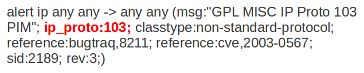
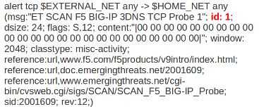

Sustavi za detekciju napada (Suricata)
TIM: Aleksandra Sobodić, Dario Supan, Ivanko Zekić
Uvod
Sve češće se pokazuje da se zaštita kontrolom pristupa, mrežnim barijerama i softverom za sprječavanje infekcije zlonamjernim programima (virusi, crvi, trojanki konj) nije dovoljna. Javlja se potreba da se sustav obrani i od napada koji su dobro maskirani i skriveni, te koji su uspjeli prodrijeti kroz sve ostale zaštitne mehanizme. Treba napomenuti da su bitni i napadi koji potječu iznutra, odnosno od zaposlenika u poduzeću. Ti napadači (eng. insider) samostalno ili u dogovoru s nekim napadačem izvana pokušavaju da ugroze sustav iz različitih motiva. Kao odgovor na ove probleme pojavili su se sustavi za otkrivanje odnosno detekciju upada u mreže (eng. Intrusion Detection Systems, IDS) i sustavi za sprječavanje ili prevenciju upada u mreže (eng. Intrusion Prevention Systems, IPS). Te dvije grupe zaštitnih sustava predmet su ovog rada.
--Ivanko Zekić 10:45, 10. siječnja 2013. (CET)
Sustavi za detekciju napada (IDS)
Napad se može definirati kao bilo koji skup akcija koji pokušava da naruši integritet, povjerljivost ili raspoloživost resursa. Sustav za detekciju napada provjerava dolazeći ili odlazeći promet i identificira sumnjive uzorke koji mogu ukazati na postojanje napada na mrežu ili računalni sustav. Napadi se mogu izvesti na različite načine, na primjer, pomoću zlonamjernih programa, iskorištavanjem raznih propusta u aplikacijama, slanjem paketa koje mrežna barijera propušta, a koji mogu iskoristiti ranjivost neke aplikacije (na primjer Web servera) ili običnim lažiranjem IP adresa. [Pleskonjić, Maček, Đorđević, Carić, 2007]
--Ivanko Zekić 11:08, 10. siječnja 2013. (CET)
Podjela IDS sustava prema različitim kriterijima
Sustavi za detekciju napada mogu se klasificirati na više načina, zavisno o kriterijima za klasifikaciju [Pleskonjić, Maček, Đorđević, Carić, 2007]: što se detektira, gdje je IDS sustav smješten, kada otkriva napad i kako reagira na napad.
--Ivanko Zekić 11:16, 10. siječnja 2013. (CET)
Sustavi za sprječavanje napada (IPS)
Mrežne barijere i antivirusni programi pokušavaju blokirati napade, IDS pokušava identificirati napad dok je u tijeku, odnosno dok se događa. Ove tehnike su izuzetno bitne za obranu sustava, ali imaju određena ograničenja. Mrežna barijera može zaustaviti servis blokirajući određene portove, ali ne može ocijeniti promet koji koristi dozvoljene (otvorene) portove. Sam IDS može ocijeniti, odnosno analizirati promet koji prolazi kroz ove otvorene portove, ali ga ne može zaustaviti. Ovdje dolazimo do IPS koji može proaktivno blokirati napade.
IDS sustavi zasnovani na potpisima, koncentrirani su na to kako napad radi odnosno kako se izvodi. U slučaju da napadač unese minimalne izmjene u napad pomoću različitih tehnika za izbjegavanje IDS-a, prethodno formirani potpisi neće više moći otkriti napad. IPS se zbog toga fokusira na to što napad radi, što je relativno nepromjenjivo. IPS sustavi ne predstavljaju ništa revolucionarno na području sigurnosti već oni samo integriraju postojeće sigurnosne tehnologije u jedan cjelovit sustav. IPS sustavi po svojoj prirodi sprječavaju poznate napade. Nove napade, koji su nepoznati, treba prvo identificirati i analizirati, pa na temelju toga napraviti potpis, tj. oznaku koja će biti dodana u bazu IPS sustava kako bi se omogućila detekcija napada. Jedan od osnovnih zahtjeva koji se predstavljaju pred svaki budući IPS sustav je da obuhvaća i sprječava poznate i nepoznate napade na računalne sustave i mreže.
Osim same detekcije poznatih napada na osnovu potpisa, IPS sustavi sadrže algoritme za otkrivanje napada na osnovu definiranih sigurnosnih politika i anomalija u sustavu. Osim detekcije napada od sustava za sprječavanje napada se očekuje da osigura automatizirani odgovor kojim će se spriječiti daljni tok napada. Sprječavanje napada najčešće se svodi na prekidanje veze sa onih adresa na kojima su primijećene zlonamjerne aktivnosti. [Pleskonjić, Maček, Đorđević, Carić, 2007]
Osnovne funkcije IPS sustava su sljedeće [Pleskonjić, Maček, Đorđević, Carić, 2007]:
- identifikacija neovlaštenih aktivnosti na osnovu potpisa
- identifikacija neovlaštenih aktivnosti na osnovu detektiranih anomalija
- vođenje evidencije i/ili slanje upozorenja administratorima zaduženim za sigurnost u realnom vremenu
- prikupljanje forenzičkih podataka o detektiranim napadima
- sprječavanje napada
--Ivanko Zekić 11:46, 10. siječnja 2013. (CET)
Podjela IPS sustava
IPS sustavi se dijele na dva osnovna tipa [Pleskonjić, Maček, Đorđević, Carić, 2007]:
1. IPS sustavi smješteni na računalu, koji štite računalo (eng. host based IPS, HIPS)
2. mrežni IPS sustavi (eng. network based IPS, NIPS)
--Ivanko Zekić 11:51, 10. siječnja 2013. (CET)
Općenito o Suricati
Suricata je IPS/IDS (eng. Intrusion Prevention System/Intrusion Detection System) sustav otvorenog programskog koda, te je razvijen od strane Open Information Security fondacije (OISF). Beta verzija je puštena u prosincu 2009, a u srpnju 2010. godine se pušta prva standardna verzija Suricate, odnosno sustava za otkrivanje i sprječavanja napada.
Suricata mehanizam spada u tzv. sljedeću generaciju mehanizama otvorenog koda za otkrivanje i sprječavanje napada. Ovaj alat nije napravljen u svrhe da zamijeni ili imitira postojeće alate u informatičkoj industriji već da iznese nove ideje i tehnologije na području informatike [1].
--Aleksandra Sobodić 17:45, 9. siječnja 2013. (CET)
{kind=link}
IDS/IPS
Suricata se temelji na pravilima ID/IP mehanizma koji koristi vanjski razvijene setove pravila kako bi pratio mrežni promet i upozorio administratora sustava na sumnjive događaje. Dizajnirana je na način da bude kompatibilna s već postojećim mrežno-sigurnosnim komponentama. Suricata sadrži jedinstvenu izlaznu funkcionalnost i mogućnost priključivanja biblioteka kako bi prihvatila pozive iz drugih aplikacija. Prvotno izdanje Suricate može se pokretati na Linux 2.6 platformi koja podržava ugrađenu i pasivnu konfiguraciju za praćenje prometa, te koja je sposobna nositi se i s više gigabitnim razinama prometa. Linux 2.4 može isto podržavati Suricatu, ali sa smanjenim konfiguracijskim funkcionalnostima poput ugrađene opcije. Dostupna ispod verzije 2 Opće javne licence (General Public Licence), Suricata eliminira troškove ID/PS mehanizma i osigurava skalabilnu opciju za većinu kompleksnih sigurnosno mrežnih arhitektura. [2]
--Aleksandra Sobodić 17:45, 9. siječnja 2013. (CET)
Višedretvenost
Suricata kao višedretveni mehanizam nudi veću brzinu i efikasnost prilikom analiziranja mrežnog prometa. Uz hardversku akceleraciju (uzimajući u obzir ograničenja hardvera i mrežne kartice), mehanizam je napravljen kako bi se mogla iskoristiti povećana procesorska snaga koju nude zadnji višejezgreni CPU sa čip-setovima. Suricatina implementacija je vrlo jednostavno i popraćena korak-po-korak dokumentacijom i korisničkim priručnikom.[3]
--Aleksandra Sobodić 17:45, 9. siječnja 2013. (CET)
Razvoj i značajke
Cilj prve faze razvoja Suricata projekta je bio da se ostvari distributivan i funkcionalan IDS/IPS mehanizam. Mehanizam podržava i omogućava sljedeće funkcionalnosti: zadnji Snort VRT, Snort prijavljivanje, pravilo jezičnih mogućnosti, višedretvenost, hardverska akceleracija (s ovisnostima i ograničenjima hardvera i mrežne kartice), jedinstveni izlaz koji omogućuje interakciju sa sustavom za upravljanje s vanjskim zapisima, IPv6, IP reputacija bazirana na pravilima, biblioteke s mogućnošću priključka za interakciju s drugim aplikacijama, izvođenje statističkih izlaza i jednostavan početnički korisnički priručnik.
Uključivanjem otvorenog programskog koda u zajednicu i omogućavajući joj vodeći IDS/IPS set pravila dostupnim, OISF je izgradio Suricatin mehanizam kako bi pojednostavio proces održavanja optimalne razine sigurnosti. Kroz strateška partnerstva, OISF utječe na stručnost prijetnji (eng. Emerging Threats – www.emergingthreats.net) i druge istaknute resurse u industriji osiguravajući pritom najnovije i sveobuhvatne setove pravila dostupnima.
HTP biblioteka je HTTP normalizator i parser koju je napisao Ivan Ristić tvorac Mod Security za OISF. Ova biblioteka integrira i pruža vrlo naprednu obradu HTTP tokova za Suricatu. HTP biblioteka je potrebna ovom mehanizmu, ali se može koristiti i neovisno o njemu na širokom rasponu aplikacija i alata.[4]
--Aleksandra Sobodić 17:46, 9. siječnja 2013. (CET)
Korisnost Suricate
Postoji nekoliko razloga za korištenje Suricate, višedretvenog programa za nadziranje mrežnog prometa:
1. Visoka skalabilnost [5]
Suricata je (multi) višedretvena. To znači da se može pokrenuti jedna instanca koja će uravnotežiti opterećenje obrade kroz svaki procesor na senzor Suricate koja je ovisno o tome konfigurirana za korištenje. To omogućuje da komad hardvera postigne, odnosno dosegne 10 gigabita brzine u stvarnom prometu bez žrtvovanja skupih pravila za pokrivenost.
2. Identifikacija protokola [6]
Suricata automatski prepoznaje najčešće korištene protokole već pri samom pokretanju novoga prijenosa (eng. stream), omogućavajući onom koji piše pravila za protokole da ih odmah napiše, a ne da prije toga čeka na pristup (eng. port) i to čini Suricatu „Malware Command & Control Channel Hunter“. Prekid pristupa HTTP CnC kanala, koji se inače normalno prikazuju od strane većine IDS sustava, su dječja igra za Suricatu. Nadalje, zahvaljujući određenim ključnim riječima može se odgovarati na područje protokola koje se kreće od http URI do SSL identifikatora certifikata.
3. Identifikacija datoteka, MD5 kontrolne sume (eng. Checksums) i otpakiravanje datoteka [7]
Suricata može identificirati tisuće vrsta datoteka prilikom prolaska kroz određenu mrežu. Ne samo da ih se može identificirati već korisnik može odlučiti da li želi dublje istražiti, odnosno želi li ih označiti za otpakiravanje. U tom slučaju će se određena datoteka zapisati na disk zajedno s meta podacima koji opisuju zatečeno stanje i protok. Datotečna MD5 kontrolna suma se izračunava u tijeku prijenosa na način da ako se ima popis MD5 hasheova koje korisnik želi zadržati u svojoj mreži ili se želi zaštiti od njih, Suricata ih može naći.
4. IDS/IPS (sustav za otkrivanje i sprječavanja napada) [8]
Suricata implementira kompletni signaturni jezik kako bi prepoznala poznate prijetnje, kršenje pravila i zlonamjerno ponašanje. Suricata će također otkriti mnoge nepravilnosti u prometu kojeg nadzire. Suricata je sposobna koristiti specijaliziran skup pravila za nastale prijetnje (eng. Emerging Threats) i VRT skup pravila.
5. Visoke perfomanse [9]
Jedna Suricatina instanca je sposobna nadzirati multi-gigabitski promet. Jezgra je izgrađena kao multidretvena, moderna, čista, a kod baze je visoko skalabilan. Posjeduje i podršku za hardversko ubrzanje od nekoliko dobavljača i kroz PF_RING i AF_PACKET. Eksperimentalni GPU akcelerator prenosi neke CPU intenzivne zadaće na grafičku karticu.
6. Automatska detekcija protokola [10]
Suricata će automatski detektirati protokole kao što su HTTP na bilo kojem portu i primijenit će odgovarajuću detekciju i logiku prijave. To uvelike pomaže u pronalaženju malicioznog koda i CnC kanala.
7. Nadgledanje mrežne sigurnosti - NSM (eng. Network Security Monitoring): Više od IDS-a [11]
Suricata može prijaviti HTTP zahtjeve, prijavljivati i trgovati TLS certifikatima, otpakiravati datoteke iz tokova, te ih pohraniti na disk. Cijela pcap (eng. Packet capture) podrška dozvoljava i omogućuje laganu analizu. Sve navedeno čini Suricatu snažnim mehanizmom za nadgledanje mrežne sigurnosti (NSM) ekosustava.
TLS / SSL evidencija i analiza : Ne samo da se može uskladiti s većinom aspekata SSL/TLS razmjene unutar jezičnog skupa pravila zahvaljujući Suricatovom TLS parseru, već se također mogu evidentirati sve razmjene ključa u svrhu analize. To je zapravo odličan način osiguranja mreže od toga da postane žrtva slabo renomiranih potvrda.
HTTP evidentiranje: Zašto dodati više hardvera u vlastitu mrežu samo da bi se prijavila http aktivnost kada se pomoću IDS već to vidi? Suricata će prijaviti sve HTTP veze na bilo koji port kako bi pridonijela kasnijoj analizi.
8. Lua skriptiranje [12]
Napredna analiza i funkcionalnost dostupna za otkrivanje stvari nije moguća bez sintaksnog skupa pravila.
9. Industrijski standardni izlazi [13]
Putem Unified2 izlaznog formata i Barnyard2 alata, Suricata se može koristiti s BASE, Snorby, Sguil, SQueRT i drugim sličnim alatima.
--Ivanko Zekić 17:43, 9. siječnja 2013. (CET)
Glavne značajke
Višedretvenost
Zapravo,korištenje višedretvenosti u sustavima za otkrivanje napada predstavlja novitet na tom području. Obrada paketa se odvija unutar jedne ili više dretvi. Dretve koriste jednu ili više dretvenih modula prilikom toga. Dretve imaju u ulaznom redu rukovatelja i u izlaznom redu rukovatelja. Oni se koriste prilikom preuzimanja paketa od drugih dretvi ili iz globalnog bazena paketa. Dretva se može postaviti tako da ostane na CPU/jezgri. Dretveni moduli su pohranjeni u ThreadVars strukturi. Trenutačno postoji kod za posjedovanje dretve s 1,2,3 ili varijabilnim brojem modula. Postoji velika vjerojatnost da će na kraju ostati samo varijabilan kod. Kreirana dretva pod nazivom „Detect1“ pokupi pakete iz reda „stream-queue1“ te pritom koristi za to rukovatelja redom „simple“. Nakon što se paket obradi stavlja se u red „verdict-queue“ pomoću rukovatelja redom „simple“. Tip dretve je 1slot što znači da samo jedan modul može biti korišten. Modul „Detect“ je postavljen kao slot funkcija s unaprijed postavljenim kontekstom detekcijskog mehanizma kao pokazivača.
Opis modula dretve kaže da modul dretve definira jedinicu paketa za obradu. Modul može svašta raditi od nabavke paketa preko dekodiranja i detekcije do upozoravanja. Jedan ili više tih modula mogu biti pokrenuti unutar dretve. Modul može proizvesti više od jednog paketa za izlaz npr. u tunelu dekodiranje ili u NFQ stječu module koji mogu čitati više od jednog paketa iz kernela po čitanju.
Opis reda kaže da ako više dretvi se koristi prilikom serijske obrade paketa, redovi se koriste kako bi se ti paketi transferirali. Dretve imaju funkciju rukovatelja redom kako bi se utvrdio način na koji se paket pribavio i/ili iskopao. Najjednostavnijim riječima ovo je FIFO red. Prvi red uvijek predstavlja „bazen paketa“, odnosno bazen unaprijed alociranih paketa. Zadnji red je također bazen paketa, pa se tako paketi vraćaju na njega.
Opis rukovatelja redom kaže da funkcija rukovatelja redom se poziva od strane dretve kako bi ona stekla ili kako bi se riješila paketa od prethodne ili sljedeće dretve. Najjednostavniji rukovatelj se naziva „simple“ i on jest FIFO rukovatelj. Mogu biti razvijeni i komeplesniji primjeri rukovatelja redom kao što je npr. razdvajanje IPv4 i IPv6 paketa, te njihovo slanje različitim putevima. [14]
--Aleksandra Sobodić 21:25, 11. siječnja 2013. (CET)
Statistika performansi
Postoje dvije osnovne komponente kod izvođenja statistike performansi. Prvo, modul doista broji stavke, kao što stream modul broji nove streamove/sek. A kao drugo postoji modul koji skuplja sva ta stanja i čini ih dostupnima administratoru na određeni način (log, snmp msg, itd.) Statistika performansi mehanizma koja se prikuplja: [15]
• bajtovi/sek
• paketi/sek
• novi tok/sek
• trajanje toka
• veličina toka
• novi stream/sek
• trajanje stream
• veličina stream
• upozorenja/sek
• prekid protokola
• ispušteni paketi
--Aleksandra Sobodić 21:25, 11. siječnja 2013. (CET)
Protokol automatske detekcije
Mehanizam ima ključne riječi za IP, TCP, UDP i ICMP, ali i za HTTP, TLS, FTP i SMB. Korisnik prema tome može napisati pravilo koje će uočiti podudarnost unutar HTTP streama, npr. bez obzira na port stream se nastavlja odvijati. To će revolucionizirati detekciju i kontrolu malicioznog koda. U budućnosti se planira napraviti detekcija za još više slojeva protokola. [16]
Gzip dekompresija
HTP parser će dekodirati Gzip kompresirane streamove, dozvoljavajući još više detaljnijih podudaranja unutar mehanizma. [17]
Neovisna HTP biblioteka
HTP parser će biti vrlo koristan i mnogim drugim aplikacijama poput proxyjima, filterima, itd. Parser je dostupan kao biblioteka također i pod GPLv2 zbog lakše integracije u druge alate. [18]
Standardne ulazne metode
Korisnik može koristiti NFQueue, IPFRing i standardni LibPcap za hvatanje prometa. Iz Suricate najavljuju i skoro pojavljivanje IPFW podrške. [19]
Unified2 izlaz
Korisnik može koristiti vlastite alate za standardne izlaze i metode novog mehanizma Suricate jer su provjereno 100% kompatibilni međusobno. [20]
Tokovne varijable
Moguće je uhvatiti informacije izvan streama i pohraniti ih u varijablu čija se podudarnost može i kasnije ponovno provjeriti. [21]
Brzo IP podudaranje
Mehanizam Suricate će automatski preuzeti pravila koja odgovoraju IP (kao što je RBN i ugrožena IP lista od Emerging Threats) i stavit će u odgovarajući posebno brz pretprocesor. [22]
HTTP Log modul
Svi HTTP zahtjevi mogu biti automatski prosljeđeni u apache-stil log formatu datoteke. Ta značajka je vrlo korisna za nadgledanje i prijavljivanje aktivnosti koje su posve neovisne o setu pravila i podudaranju. U tom slučaju se mehanizam može koristiti samo kao HTTP logging sniffer. [23]
Flowint
Flowint predstavlja nešto poput globalne varijable koja omogućuje pohranu podataka nad kojima se onda mogu obavljati razne matematičke operacije. Na taj način se mogu uspoređivati podaci iz paketa koji se nalaze u različitim streamovima. Uobičajena upotreba ove mogućnosti je brojanje određene pojave u sustavu. Nakon što pojava desegne broj koji smo sami definirali sustav nam šalje konfiguriranu obavijest. Primjer se može naći u zadnjem poglavlju kod testiranja višekratnih pokušaja unosa nekorektnih podataka za logiranje.
Podržane platforme
Suricata se može pokretati na Linux, BSD, Mac OS X i Windows platformi. Podržava ugrađenu i pasivnu konfiguraciju za praćenje prometa koja je sposobna nositi se i s više gigabitnim razinama prometa. Za više informacija o podržanim platformama mogu se pogledati sljedeći linkovi:
Ubuntu instalacija [24]
Debian instalacija [25]
CentOS5 instalacija [26]
CentOS 5.6 instalacija [27]
Fedora Core instalacija [28]
FreeBSD 8 instalacija [29]
Mac OS X (10.6.x) instalacija [30]
Windows instalacija [31]
Hardver podrška:
Endace DAG
Napatech
Myricom
--Aleksandra Sobodić 21:26, 11. siječnja 2013. (CET)
Suricata - Praktični dio
Praktični dio Suricate započinje njezinom instalacijom na Windows XP Professional operacijskom sustavu koji se nalazi na virtualnoj mašini VMware® Workstation [32].
Savjet: Obaviti testiranje softvera na virtualnoj mašini!
Instalacija Suricate zaista ovisi o kojem operacijskom sustavu je riječ (poglavlje u ovom seminaru: Podržane platforme).
1. Instalirati Cygwin kako bi se dobilo "linuxoidno" okruženje za Windowse jer je u njemu moguće pisati programe koji koriste Linux biblioteke.
- direktan link na instalacijsku datoteku sa Cygwin stranice [33]
{kind=link}
{kind=link}
{kind=link}
{kind=link}
{kind=link}
{kind=link}
{kind=link}
{kind=link}
{kind=link}
Međutim za potrebe Suricate potrebno je odabrati dodatne pakete, te ih ovim putem instalirati na način da se u Search upiše ime paketa. Tražilica će automatski vratiti rezultat, odnosno traženi paket kojeg je moguće odabrati pritiskom na Skip, čime se u kvadratić u ravnini s nazivom paketa upisuje oznaka x što znači da je paket odabran. Potrebno je pronaći sve navedene pakete (slika 10.) i označiti ih, a tek onda pritisnuti Next. Nakon što su svi paketi odabrani potrebno je očistiti Search, pritisnuti na View tipku sve dok se desno od nje ne prikaže tekst Pending. U tom prikazu se može vidjeti da li su odabrani svi željeni paketi.
{kind=link}
{kind=link}
{kind=link}
{kind=link}
2. Dodati stazu (path) sustavskim varijablama (Control Panel\System\Advanced\Environment Variables):
C:\windows\system32;C:\cygwin\bin;C:\cygwin\lib\pkgconfig;
{kind=link}
3. Instalirati libyaml [34]
- direktan link za instalaciju yaml paketa (trenutačna verzija je yaml-0.1.4.tar.gz)[35]
Potrebno ga je raspakirati unutar:
C:\cygwin\tmp
Nakon raspakiravanja dobije se sljedeći direktorij:
C:\cygwin\tmp\yaml-0.1.4
4. Instalirati libpcap [36] i preuzeti WinPcap instalaciju za Windowse (trenutačna verzija je WinPcap Version 4.1.2)
Instalacija WinPcap je kliketuša Next po default opcijama.
Nakon toga je potrebno preuzeti razvojni paket (WinPcap 4.1.2 Developer's Pack)[37] koji je potreban kako bi se mogla Suricata pokrenuti na Windowsima.
Potrebno je prekopirati biblioteke iz neraspakirane preuzete datoteke:
- Kopirati sav sadržaj iz WpdPack\Lib\ u C:\cygwin\lib\
- Kopirati sav sadržaj iz WpdPack\Include\ u C:\cygwin\usr\include\
- U C:\cygwin\lib potrebno je preimenovati “libwpcap” u “libpcap”
5. Pokrenuti Cygwin ikonu i pokrenuti yaml datoteku.
{kind=link}
Potrebno je upisati sljedeće naredbe (nakon svake upisane naredbe stisnuti Enter):
cd /tmp cd yaml-0.1.4 ./configure --prefix=/usr && make && make install
Pomoću prethodnih naredbi napravljena je konfiguracija i instalacija yaml paketa koji su potrebni za rad u Suricati.

Zatim, potrebno je vratiti se u direktorij /tmp pomoću naredbe:
cd ..
6. Kompajlirati Suricatu iz git-a (ako se želi Stable verzija Suricate trenutačno 1.4 onda prijeći na sljedeću točku 7.)
U Cygwin cmd-u potrebno je upisati sljedeću naredbu:
git clone git://phalanx.openinfosecfoundation.org/oisf.git
Pomoću prethodne naredbe inicijalizirao se prazan Git repozitorij u cygwin/tmp/oisf/.git, odnosno kreirao se lokalni direktorij s nazivom oisf. Direktorij oisf sadržava datoteke koje imaju isti sadržaj te povijest kao i repozitorij koji je netom kloniran naredbom clone, međutim (da ne bi bilo zabune) oni ne komuniciraju međusobno osim ako se ne da izričita naredba za to.
{kind=link}
dos2unix.exe libhtp/configure.ac && dos2unix.exe libhtp/htp.pc.in && dos2unix.exe libhtp/Makefile.am

./autogen.sh && ./configure && make
Instalacija traje cca 10 - 15 minuta.
{kind=link}
7. Kompajlirati Suricatu stable 1.4.
- direktni link na preuzimanje Suricata stable zadnje verzije [38]
Preuzetu instalacijsku datoteku suricata-1.4.tar.gz potrebno je spremiti u direktorij C:\cygwin\tmp.
Međutim, ako se želi izbjeći ručno spremanje datoteke moguće je i pomoću naredbi pohraniti i raspakirati, te na kraju i pokrenuti datoteku pomoću sljedećih naredbi:
(Naredbu wget potrebno je prethodno instalirati, odnosno dodati na isti način kao što su se dodavali i ostali paketi u Cygwin - objašnjeno u točki 2.)
wget http://www.openinfosecfoundation.org/download/suricata-1.4.tar.gz tar –zxf suricata-1.4.tar.gz cd suricata-1.4 dos2unix.exe libhtp/configure.ac && dos2unix.exe libhtp/htp.pc.in && dos2unix.exe libhtp/Makefile.am libtoolize -c && autoreconf -fv --install && ./configure && make
8. Postaviti Suricatu da radi u Windows okruženju.
- Potrebno je kreirati novi direktorij C:\Suricata, te kopirati Suricata.exe datoteku iz C:\cygwin\tmp\oisf\src\.libs u C:\Suricata.
- Zatim je potrebno kreirati direktorij C:\Suricata\log i C:\Suricata\rules (sadržavat će pravila Suricate).
- Na ovom linku [39] moguće je preuzeti set pravila. Također, moguće je i sa ovog linka [40], ali Emerging Threats (prvi link) je razvio set pravila upravo za Suricatu kako bi se u potpunosti iskoristile njezine mogućnosti.
- Preuzeta datoteka emerging.rules.tar.gz se raspakira unutar C:\Suricata\rules direktorija.
- Zatim se ode u C:\cygwin\tmp\oisf i kopira se classification.config , reference.config i suricata.yaml u C:\Suricata
- Kopira se C:\cygwin\usr\share\misc\magic.mgc, odnosno magic.mgc u C:\Suricata direktorij
- Nakon toga se otvori suricata.yaml s NotePad-om, WordPad-om i sl., te se nadopune sljedeće linije:
default-log-dir: C:\Suricata\log ……… - file: enabled: yes filename: C:\Suricata\suricata.log ………. default-rule-path: C:\Suricata\rules\ classification-file: C:\Suricata\classification.config reference-config-file: C:\Suricata\reference.config HOME_NET: "[192.168.152.129]" (postaviti mrežu za koju se želi da je Suricata pregledava)
{kind=link}
9. Pokretanje Suricate
Pokrenuti cmd kao administrator i navigirati do C:\Suricata, a zatim pokrenuti pomoću naredbe:
suricata.exe -c suricata.yaml -i 192.168.152.129 //-i 192.168.152.129 je IP/sučelje za koje se želi da ga Suricata osluškuje, za primjer je uzeta naša mrežna kartica
{kind=link}
10. Primjer konfiguriranja Suricate
Konfiguriranje Suricate da detektira jpeg slike.
U suricata.yaml datoteci promijeniti sljedeće linije:
- file-store:
enabled: yes
………
- reassembly:
memcap: 64mb
depth: 10mb
………
- rule-files:
- files.rules #dodati novo pravilo
………
magic-file: C:\Suricata\magic.mgc
Zatim je potrebno otići u C:\Suricata\rules i pronaći datoteku files. Sadržaj datoteke se mijenja na način da se pronađe linija:
# Same for JPEG's #alert http any any -> any any (msg: "FILEMAGIC jpg(1)"; flow:established, to server; filemagic:"JPEG image data"; filestore; sid:10; rev1;)
I ispravi na sljedeći način:
# Same for JPEG's alert http any any -> any any (msg: "FILEMAGIC jpg(1)"; flow:established; filemagic:"JPEG image data"; filestore; sid:10; rev1;)
{kind=link}
Ako se želi isprobati dorađena konfiguracija upiše se ponovno sljedeća naredba unutar cmd-a:
suricata.exe -c suricata.yaml -i 192.168.152.129
Nakon što se Suricata mehanizam pokrenuo, potrebno je otvoriti novi Command Prompt i upisati sljedeće naredbe:
wget http://......jpg //izabrati po želji web stranicu s jpg slikom s web-a
{kind=link}
{kind=link}
{kind=link}
Zatim, opet u novom Command Promptu navigira se do C:\Suricata\log, te upiše naredba za ispis sadržaja datoteke fast.log
cat fast.log
{kind=link}
Prilikom pretraživanja koju ćemo sliku preuzeti, u nekoliko navrata stranica se nije htjela učitati s upozorenjem da je pristup toj web stranici (odnosno jpg slici) zabranjen. U fast.log datoteci je otkriven uzrok tome:
01/19/2013-12:45:31.384280 [**] [1:2014726:14] ET POLICY Outdated Windows Flash Version IE
[**] [Classification: Potential Corporate Privacy Violation] [Priority: 1] {TCP} 192.168.152.129:1445 -> 173.194.35.6:80
S obzirom na definirana i konfigurirana pravila Suricata će dopuštati i zabranjivati pristup web stranicama našim podacima, ali i nama u slučaju ako "smatra" da bi se mogli izložiti određenim opasnostima Interneta.
Zaključak: Suricata se u potpunosti može prilagoditi potrebama osobe koja je želi koristiti, jedino što je potrebno jest znanje o njezinim mogućnostima konfiguracije (poglavlje ovog seminara: Performanse) te pravilima (poglavlja ovog seminara: Suricata pravila/Upravljanje pravilima pomoću Oinkmaster).
Ostale mogućnosti konfiguriranja Suricate za vlastite potrebe se mogu pogledati na ovom linku [41].
--Aleksandra Sobodić 15:47, 19. siječnja 2013. (CET)
--Ivanko Zekić 15:48, 19. siječnja 2013. (CET)
Suricata pravila
Potpisi imaju važnu ulogu u Suricati. U većini slučajeva ljudi koriste već postojeće setove pravila. Najčešće korišteni su: Emerging Threats [42], Emerging Threats Pro [43] i od SourceFirea VRT [44]. U poglavlju Upravljanje pravilima pomoću Oinkmastera bit će opisan način instalacije pravila.
Pravilo/potpis se sastoji od sljedećeg:
akcije (eng. action), zaglavlja (eng. header) i opcija za pravilo (eng. rule-options).
Primjer potpisa [45]:
{kind=link}
Akcija
Svi potpisi imaju različita svojstva. Jedan od njih jest i Action property. On definira što će se dogoditi kada se potpisi podudaraju.
Postoje četiri vrste akcije (eng. Action) [46]:
1) Pass - ako se potpis podudara i sadrži propusnicu, Suricata će prestati skenirati paket i preskače na kraj svih pravila, ali samo za taj paket.
2) Drop - ovo obuhvaća samo IPS/inline način. Ako program pronađe potpis koji se podudara sadržavajući drop, odmah se zaustavlja, te taj paket neće biti dalje poslan. Nedostatak: Primatelj neće primiti poruku o tome što se dogodilo, već će sesija rezultirati istekom vremena (svakako s TCP). Suricata generira upozorenje za ovakav paket.
3) Reject - ovo je aktivno odbijanje paketa. I pošiljatelj i primatelj će primiti odbačeni paket. Postoje dvije vrste odbačenih paketa koji će biti automatski odabrani. Ako vrijeđajući (eng. offending) paket zabrinjava TCP pojavit će se ponovljeni (eng. reset) paket. Za sve ostale protokole pojavit će se ICMP-pogreška (eng. error) paket. Suricata također generira upozorenje. Međutim u inline/IPS načinu, offending paket će biti odbačen kao i u "drop" akciji.
4) Alert - ako se potpis podudara i sadržava upozorenje, paket će biti tretiran kao i bilo koji drugi ne-ugroženi paket, osim za ovog gdje će upozorenje biti generirano od Suricate. Jedino administrator sustava može primjetiti ovo upozorenje.
Inline/IPS može blokirati mrežni promet na dva načina. Prvi način je pomoću drop-a, a drugi pomoću reject-a.
Pravila će biti učitana redoslijedom kojim se nalaze u datoteci. Ali, će biti obrađena drugačijim redoslijedom. Potpisi imaju različite prioritete. Najvažniji potpisi, odnosno potpisi visokog prioriteta će biti prvi skenirani. Moguće je promijeniti redoslijed prioriteta. Po defaultu redoslijed je ovakav: pass, drop, reject, alert.
action-order: - pass - drop - reject - alert
To znači da se pass pravilo uzima u obzir prije drop pravila, a drop pravilo prije reject pravila itd.
Primjer akcije drop: [47]

--Aleksandra Sobodić 21:26, 11. siječnja 2013. (CET)
Protokol
Ključna riječ protokol u potpisu će reći Suricati na koji se to protokol odnosi. Korisnik može birati između četiri postavke: TCP(za tcp-promet), UDP, ICM i IP.
IP se odnosi na 'all' ili 'any'.
Suricata dodaje nekoliko protokola: HTTP, FTP, TLS (uključuje SSL), SMB (tzv. protokoli aplikacijskog sloja ili sedmi sloj protokola). Ako korisnik ima npr. potpis s HTTP protokolom, Suricata će se pobrinuti da potpis se može podudarati samo ako se radi o HTTP prometu.
Primjer s protokolom tcp: [48]
--Aleksandra Sobodić 21:28, 11. siječnja 2013. (CET)
{kind=link}
Izvor i odredište
U izvoru korisnik može dodijeliti IP-adrese; IPv4 i IPv6 se mogu kombinirati, ali mogu biti i zasebno odvojene. Također, može postaviti varijable kao što je HOME_NET.
U Yaml-datoteci korisnik može postaviti IP adrese za varijable kao što su EXTERNAL_NET i HOME_NET. Ove postavke će biti korištene kada korisnik iskoriste te varijable u pravilu.
U izvorištu i odredištu korisnik može koristiti i znakove kao što su ! i [].
Kao primjer:
! 1.1.1.1 (Every IP address but 1.1.1.1) ![1.1.1.1, 1.1.1.2] (Every IP address but 1.1.1.1 and 1.1.1.2) $HOME_NET (Your setting of HOME_NET in yaml) [$EXTERNAL_NET, !$HOME_NET] (EXTERNAL_NET and not HOME_NET) [10.0.0.0/24, !10.0.0.5] (10.0.0.0/24 except for 10.0.0.5) […..,[....]] […. ,![.....]]
Potrebno je obratiti pažnju ako su postavke u Yaml sljedeće:
HOME_NET: any EXTERNAL_NET: ! $HOME_NET
U ovom slučaju se ne može napisati potpis koristeći EXTERNAL_NET zato što se odnosi na 'not_any'. Ovo je nevažeća postavka.
Primjer izvora i odredišta u potpisu: [49]
crveno označeni dio primjera predstavlja izvor
crveno označeni dio primjera predstavlja odredište
--Aleksandra Sobodić 21:29, 11. siječnja 2013. (CET)
{kind=link}
{kind=link}
Portovi (izvorišni i odredišni port)
Promet dolazi i odlazi kroz portove, a različiti portovi imaju različite brojeve (eng. port number). Na primjer, HTTP-port koristi port 80, dok HTTPS koristi 443, a MSN 1863. Zajednički port će biti postavljen na 'any', a to će biti pod utjecajem protokola. Izvorišni port je nasumično određen od strane operacijskog sustava. U postavkama portova korisnik može koristiti i posebne znakove:
! iznimka/negacija : raspon [] znakovi kako bi se razjasnilo koji dijelovi pripadaju zajedno , odvajanje
Primjer:
[80, 81, 82] (port 80, 81 i82) [80: 82] (raspon od 80 do 82) [1024: ] (od 1024 do najvećeg broja porta) !80 (svaki port osim 80) [80:100,!99] (raspon od 80 do 100 bez 99) [1:80,![2,4]] [….[.....]]
Primjer portova u potpisu (crveno označeni dio primjera predstavlja port): [50]
--Aleksandra Sobodić 21:31, 11. siječnja 2013. (CET)
{kind=link}
Smjer
Smjer kaže u kojem smjeru, odnosno na koji način se potpis mora podudarati. Skoro svaki potpis ima strelicu u desno što znači da se samo paketi u istom smjeru mogu podudarati.
source -> destination source <- destionation source <> destionation (both directions)
Primjer:
alert tcp 1.2.3.4. 1024 - > 5.6.7.8 80
Primjer 1 tcp-sesije [51]
U prethodnom primjeru doći će do podudarnosti jedino u slučaju ako potpis ima isti redoslijed/smjer kao korisni teret (eng. payload).
Primjer smjera u potpisu: [52]
--Aleksandra Sobodić 21:32, 11. siječnja 2013. (CET)
{kind=link}
{kind=link}
Opcije pravila
Ključne riječi imaju postavljen format:
name: settings;
Ponekad može stajati i samo ime postavke 'settings' iza čega slijedi ; .
Postoje specifične postavke za:
- meta-informacije (eng. meta-information)
- zaglavlja (eng. headers)
- korisne terete (eng. payloads)
- tokove (eng. flows)
Meta-postavke (eng. Meta-settings)
Meta-postavke nemaju efekta na Suricatina očekivanja, već imaju efekt na način na koji Suricata izvještava o događajima.
1. msg (message)
Ključna riječ msg daje više informacije o potpisu i mogućem upozorenju. Prvi dio pokazuje ime datoteke potpisa. To je konvencija u kojoj je taj dio napisan velikim slovima.
Format msg je:
msg: "..........";
Primjer:
msg: "ATTACK-RESPONSES 403 Forbidden"; msg: "ET EXPLOIT SMB-DS DCERPC PnP bind attempt";
To je konvencija u kojoj je msg uvijek prva ključna riječ potpisa.
Sljedeći primjer msg u potpisu: [53]
{kind=link}
2. Sid (signature id)
Ključna riječ sid daje svakom potpisu svoj vlastiti id. Taj id se navodi s brojem.
Format sid je [54]:
sid:123;
Primjer sid u potpisu: [55]
{kind=link}
3. Rev (Revision)
Sid ključna riječ je skoro uvijek popraćena rječju rev. Rev predstavlja verziju potpisa. Ako je potpis modificiran, broj rev-ova će porasti potpisom pisaca.
Format rev je:
rev:123;
To je konvencija u kojoj sid uvijek dolazi prije rev, a oboje su na kraju svih drugih ključnih riječi.
Primjer rev u potpisu: [56]
{kind=link}
4. Gid (group id)
Gid ključna riječ može se koristiti kako bi se različitim grupama potpisa dala druga id vrijednost (kao što je sid). Suricata po defaultu koristi gid 1. Međutim, to je moguće modificirati. Nije uobičajeno da se mijenja, ali njegovo mijenjanje nema tehničke implikacije. Jedino je promjenu moguće primjetiti u upozorenju.
Primjer gid u potpisu [57]:
Primjer je prikazan iz fast.log. U dijelu [1:2008124:2], 1 je gid (2008124 je sid and 2 je rev).
{kind=link}
5. Classtype
Classtype ključna riječ daje informacije o klasifikaciji pravila i upozorenja. Sastoji se od kratkog imena, dugačkoga imena i prioriteta. Na primjer, pomoću njega se može reći da li je pravilo samo informativno, itd. Za svaki classtype, classification.config ima prioritet koji će se koristiti u pravilu.
To je konvencija u kojoj classtype dolazi prije sid i rev, ali poslije ostalih ključnih riječi.
Primjer classtype:
config classification: web-application-attack,Web Application Attack,1 config classification: not-suspicious,Not Suspicious Traffic,3
{kind=link}
U ovom primjeru se može vidjeti na koji način se classtype pojavljuje u potpisu, classification.config i upozorenje.
Sljedeći primjer classtype u potpisu [58]:
{kind=link}
6. Reference
Reference ključna riječ se nalazi direktno na mjestima gdje se može naći informacija o potpisu i o problemu kojeg potpis nastoji riješit. Reference ključna riječ se može pojaviti i više puta u potpisu. Ova ključna riječ je namijenjenja piscima potpisa i analitičarima koji istražuju zašto se potpis podudara. Format jest:
reference: url, www.info.nl
U ovom primjeru url je vrsta reference. Postoji nekoliko vrsta reference:
system URL Prefix bugtraq http://www.securityfocus.com/bid cve http://cve.mitre.org/cgi-bin/cvename.cgi?name= nessus http://cgi.nessus.org/plugins/dump.php3?id= arachnids (No longer available but you might still encounter this in signatures.) http://www.whitehats.com/info/IDS mcafee http://vil.nai.com/vil/dispVirus.asp?virus_k= url http://
Na primjer bugtraq će biti zamijenjen potpunim url:
reference: bugtraq, 123; http://www.securityfocus.com/bid
Primjer reference u potpisu [59]:
{kind=link}
7. Priority
Priority ključna riječ dolazi s obveznom brojčanom vrijednošću koja može biti u rasponu od 1 do 255. Najčešće se koriste brojevi od 1 do 4. Potpisi s višim prioritetom će biti prvi ispitani. Najveći prioritet je 1. Normalni potpisi imaju već prioritet koji su dobili putem class type. To može biti nadglasano s ključnom riječi priority.
Format prioriteta je:
priority:1;
8. Metadata
Suricata ignorira riječi iza meta data. Suricata podržava ovu ključnu riječ zato što je dio potpisnog jezika.
Format je:
metadata:......;
--Aleksandra Sobodić 00:55, 13. siječnja 2013. (CET)
Ključne riječi korisnog tereta (eng. Payload keywords)
Payload ključne riječi pregledavaju sadržaj korisnog tereta paketa ili stream-a. [60]
1. Content
Content ključna riječ je vrlo važna u potpisima. U navodnicima se može napisati s čim bi se potpis trebao podudarati. Najjednostavniji format content-a je:
content: ”............”;
Moguće je koristiti nekoliko vrste content-a u potpisu. Contents se podudaraju prema bajtovima. Postoji 256 različitih vrijednosti bajtova (0-255). Mogu se podudarati i u svim znakovima, što zapravo znači da će se podudarati u slovima od a do z, velikim i malim slovima, a čak i u posebnim znakovima. Međutim, nije moguće sve bajtove ispisati, pa se u tom slučaju koristi heksadecimalna notacija. Također, bitno je naglasiti da se sljedeća vrsta notacije može koristiti i kod znakova koje je moguće napisati.
Primjer:
0x61 je a 0x41 je A 0x21 je ! 0x0D je povrat pokazivača 0x0A je redak
0x označava da se u obzir uzima posebna notacija. U potpisu se ne može koristiti 0x. Postoje određeni znakovi koji se ne mogu koristiti u content-u jer već predstavljaju važan dio potpisa. Kako bi se vršilo podudaranje kod takvih znakova potrebno je koristiti heksadecimalnu notaciju, poput:
“ 22 ; 3B : 3A | 7C To je konvencija u kojoj se heksadecimalna notacija zapisuje velikim slovima.
Na primjer, ako se želi zapisati "http://" u content potpisa, to se može napraviti na način da se napiše: “http|3A|//”; Potrebno je pripaziti da ako se koristi heksadecimalni zapis u potpisu, da ga se uvijek smješta između | | jer će u suprotnom notacija biti shvaćena doslovno kao dio content-a. Nekoliko primjera ukazuje na sljedeće:
content:“a|0D|bc”; content:”|61 0D 62 63|"; content:”a|0D|b|63|”;
Moguće je dopustiti potpisu da provjeri čitav korisni teret da li se podudara s content-om ili dopustiti provjeru, ali samo za određene dijelove korisnog tereta. Ako se ništa posebno ne stavlja u potpis, on će nastojati pronaći podudaranja u svim bajtovima korisnog tereta (eng. payload).
Primjer content [61]:
Po defaultu uzorak podudaranja je vrlo osjetljiv na velika i mala slova. Content mora biti točan jer u suprotnom neće doći do podudaranja.
Primjer:
{kind=link}
{kind=link}
{kind=link}
alert http $HOME_NET any -> $EXTERNAL_NET any (msg:"Outdated Firefox on Windows"; content:"User-Agent|3A| Mozilla/5.0 |28|Windows|3B| "; content:"Firefox/3."; distance:0; content:!"Firefox/3.6.13"; distance:-10; sid:9000000; rev:1;)
U content-u je moguće koristiti ! za iznimke kao što je napravljeno i u prethodnom primjeru !”Firefox/3.6.13”;, to znači da će se generirati upozorenje ako se ne koristi verzija Firefox-a 3.6.13.
2. Nocase
U slučaju kada se ne želi raditi razlika između velikih i malih slova koristi se ključna riječ nocase koja je content modifikator.
Format:
nocase;
Ključnu riječ nocase potrebno je postaviti iza content riječi koja se želi modificirati kao što je prikazano u sljedećem primjeru: [62]
content: “abc”; nocase;
{kind=link}
3. Depth
Ključna riječ depth je apsolutni content modifikator. Dolazi nakon ključne riječi content s obveznom brojčanom vrijednošću kao i u primjeru ispod:
depth:12;
Broj napisan nakon riječi depth označava koliko će se bajtova provjeravati od početka korisnog tereta.
Primjer depth [63]:
{kind=link}
4. Offset
Ključna riječ offset označava iz kojeg bajta u korisnom teretu će se provjeravati podudaranje. Na primjer, ako se postavi "offset:3", to znači da se provjerava od četvrtog bajta, pa nadalje.
Primjer [64]:
{kind=link}
Važno je napomenuti da se ključne riječi offset i depth često kombiniraju i koriste zajedno. U sljedećem primjeru se može vidjeti da ako se te dvije ključne riječi koriste zajedno, to bi zapravo značilo da će se provjera korisnog tereta vršiti od četvrtog bajta, pa sve do 6 bajta (uključujući i provjeru 6. bajta).
Primjer korištenja offset i depth:
content; “def”; offset:3; depth:6;
5. Distance
Ključna riječ distance je relativni content modifikator. To zapravo znači da indicira relaciju između ključne riječi content i content-u koji mu je prethodio. Distance ima utjecaj nakon prethodnog podudaranja (eng. preceding match). Ta ključna riječ dolazi obvezno s brojčanom vrijednošću. S vrijednošću kojom se zadaje udaljenost se određuje bajt u korisnom teretu iz kojeg će biti provjerena podudarnost relativno s prethodnim podudaranjem. Distance jedino određuje gdje da Suricata započne s traženjem uzorka. Prema tome ako se stavi da je "distance:5", to znači da uzorak može biti bilo gdje nakon prethodnog podudaranja + 5 bajtova. Za ograničavanje koliko daleko nakon posljednjeg podudaranja Suricata treba tražiti se koristi within.
Primjer distance [65]:
Objašnjenje primjera -> Ključna riječ distance (3), kaže kako se drugi (2) content povezuje na prvi (1) content.
{kind=link}
6. Within
Ključna riječ within je relativna s obzirom na prethodno podudaranje. Ta ključna riječ dolazi obvezno s brojčanom vrijednošću. Korištenjem riječi within se povećava vjerojatnost da će do podudaranja doći jedino ako se content podudara s korisnim teretom unutar (within) postavljenog seta količine bajtova. Within nikad ne može biti 0.
Primjer within [66]:
Objašnjenje primjera -> Ključna riječ within (3), kaže kako se drugi (2) content povezuje na prvi (1) content.
{kind=link}
7. Isdataat
Pomoću ključne riječi isdataat se može provjeriti postoje li još uvijek podaci o određenom dijelu korisnog tereta. Ključna riječ započinje prvo s brojem pozicije, a zatim sirovim brojem bajtove. Na kraju se opcionalno može dodati i 'relative' odvojen od njih zarezom, ako se želi provjeriti da li još uvijek postoje podaci o određenom dijelu korisnog tereta u odnosu na zadnje podudaranje.
Primjer isdataat:
isdataat:512; //potpis traži korisni teret veličine 512 bajtova isdataat:50, relative; // potpis traži 50 bajtova od zadnjeg podudaranja
8. Dsize
S ključnom riječi dsize se može provjeriti podudarnost veličine paketa korisnog tereta. Na primjer, dsize se može koristiti kao ključna riječ pomoću koje se žele pronaći korisni tereti abnormalne veličine što je vrlo poželjno kod detekcije prelijevanja međuspremnika.
Format:
dsize:<number>;
Primjer dsize u pravilu [67]:
{kind=link}
9. rpc
Ključna riječ rpc se koristi kod podudaranja sa SUNRPC CALL u RPC proceduri brojeva i RPC verziji. RPC (eng. Remote Procedure Call) je aplikacija koja dopušta računalnom programu da izvodi procedure na drugom računalu ili u drugom adresnom prostoru, te se koristi kao međuprocesna komunikacija (IPC - eng. Inter-process communication).
Format rpc:
rpc:<application number>, [<version number>|*], [<procedure number>|*]>;
Primjer ključne riječi rpc u pravilu [68]:
{kind=link}
10. pcre
Ključna riječ pcre (eng. Perl Compatible Regular Expressions) se koristi kod podudaranja regularnih izraza. Kompleksnost ove ključne riječi odražava se u smislu negativnih posljedica na performanse Suricate. Prema tome, kako bi se izbjeglo prečesto provjeravanje pcre, ta ključna riječ se onda najčešće kombinira s content na način da se content prvi provjerava i ako se on podudara tek se onda prelazi na provjeravanje pcre.[69]
Format pcre:
“/<regex>/opts”;
Primjer pcre:
pcre:”/[0-9]{6}/”;
HTTP-ključne riječi (eng. HTTP-keywords)
Ključne riječi HTTP omogućavaju da potpis provjerava određeni dio mrežnog prometa, pa tako na primjer može provjeravati pojedinosti uri, kolačića (eng.cookies), HTTP body itd. [70]
1. HTTP-zahtjev (eng. HTTP-request)
GET /index. html/ HTTP/1.0\r\n
Objašnjenje primjera -> GET je metoda. Metode su: GET, POST, PUT, HEAD itd. Uri je /index.html i HTTP/1.0 je HTTP verzija. Od ovih verzija 0.9, 1.0, 1.1, najčešće se koriste 1.0 i 1.1.
2. HTTP-odgovor (eng. HTTP-response)
HTTP/1.0 200 OK\r\n <html> <title> some page </title> </HTML>
Objašnjenje primjera -> HTTP/1.0 je HTTP verzija, 200 je odgovor-kod, a OK je odgovor-poruka.
Detaljniji primjer [71]:
Zahtjev:
Odgovor:
Zahtjev:
Iako je kolačić zaglavlje ne može se podudarati s http_header jer ima svoju vlastitu ključnu riječ tzv. http_cookie.
{kind=link}
{kind=link}
{kind=link}
Svaki dio tablice pripada tzv. međuspremniku (eng. buffer). Prema tome, HTTP_method pripada method_buffer, HTTP-headers pripada header buffer itd. Međuspremnik je dio koji Suricata drži u memoriji. Sve prethodno opisane ključne riječi se mogu koristiti u kombinaciji s buffer-om u potpisu. Ključne riječi distance i within su relativne, stoga se one mogu koristiti samo unutar istog međuspremnika. Znači, različiti međuspremnici se ne mogu povezati s relativnim ključnim riječima.
3. http_method
S http_method content modifikatorom moguće je naći posebna podudaranja i to samo na method_buffer-u. Ključna riječ http_method se može koristiti u kombinaciji sa svim prethodno navedenim content modifikatorima poput: depth, distance, offset, nocase i within. Methode su: GET, POST, PUT, HEAD, DELETE, TRACE, OPTIONS, CONNECT i PATCH.
Primjer metode u HTTP-zahtjevu:
Primjer namjene metode: [72]
{kind=link}
{kind=link}
{kind=link}
4. http_uri i http_raw_uri
S http_uri i http_raw_uri content modifikatorima moguće je naći posebna podudaranja i to samo na uri-buffer-u. Ove ključne riječi mogu se koristiti u kombinaciji sa svim prethodno spomenutim content modifikatorima poput: depth, distance, offset, nocase i within.
Primjer uri u HTTP-zahtjevu:
GET/index.html HTTP/1.0\r\n
Primjer namjene http_uri [73]:
{kind=link}
5. http_header
S http_header content modifikatorom moguće je naći posebna podudaranja i to samo na header-buffer-u. Ova ključna riječ može se koristiti u kombinaciji sa svim prethodno spomenutim content modifikatorima poput: depth, distance, offset, nocase i within.
Primjer header u HTTP-zahtjevu [74]:
Primjer namjene http_header:
{kind=link}
{kind=link}
6. http-cookie
S http_cookie content modifikatorom moguće je naći posebna podudaranja i to samo na cookie-buffer-u. Ova ključna riječ može se koristiti u kombinaciji sa svim prethodno spomenutim content modifikatorima poput: depth, distance, offset, nocase i within.
Primjer cookie u HTTP-zahtjevu [75]:
Primjer namjene http_cookie:
{kind=link}
{kind=link}
7. http_user_agent
S ključnom riječi http_user_agent content modifikatorom moguće je naći posebna podudaranja na temelju vrijednosti User-Agent header-a. Ova ključna riječ može se koristiti u kombinaciji sa svim prethodno spomenutim content modifikatorima poput: depth, distance, offset, nocase i within. Pcre također može pregledati ovaj međuspremnik s /V modifikatorom.
8. http_client_body
S http_client_body content modifikatorom moguće je naći posebna podudaranja i to samo na request-body-ju. Ova ključna riječ može se koristiti u kombinaciji sa svim prethodno spomenutim content modifikatorima poput: distance, offset, nocase i within.
Primjer client_body u HTTP-zahtjevu [76]:
Primjer namjene http_client_body:
{kind=link}
{kind=link}
9. http_stat_code
S http_stat_body content modifikatorom moguće je naći posebna podudaranja i to samo na stat-code-buffer-om. Ova ključna riječ može se koristiti u kombinaciji sa svim prethodno spomenutim content modifikatorima poput: distance, offset, nocase i within.
Primjer http_stat_code u HTTP-zahtjevu [77]:
HTTP/1.1.302 Found
Primjer namjene http_stat_code:
{kind=link}
10. http_stat_msg
S http_stat_msg content modifikatorom moguće je naći posebna podudaranja i to samo na stat-msg-buffer-u. Ova ključna riječ može se koristiti u kombinaciji sa svim prethodno spomenutim content modifikatorima poput: depth, distance, offset, nocase i within.
Primjer http_stat_msg u HTTP-zahtjevu [78]:
HTTP/1.1.302 Found
Primjer namjene http_stat_msg:
{kind=link}
11. http-server_body
S http_server_body content modifikatorom moguće je naći posebna podudaranja i to samo na response-body-ju. Ova ključna riječ može se koristiti u kombinaciji sa svim prethodno spomenutim content modifikatorima poput: distance, offset, nocase i within.
12. file_data
S file_data se pregledava tijelo HTTP odgovora, kao što se radi s http_server_body. Ključna riječ file_data radi na malo drugačiji način od ostalih modifikatora content-a. Kada se koristi u pravilu sav popratni sadržaj (content) je pogođen njegovim "djelovanjem".
alert http any any -> any any (file_data; content:"abc"; content:"xyz";)
13. fast_pattern
Samo jedan content potpisa se koristi kao Multi Pattern Matcher (MPM). Ako postoji nekoliko content-a, Suricata će izabrati najsnažniji content po tome što će ocijeniti kombinaciju duljine i raznolikost sadržaja. Što je sadržaj dulji i raznolikiji to je jači. Ponekad pisac potpisa želi uključiti drugačiji content od onoga koji je zadan po defaultu u Suricati.
Na primjer:
content:”User-Agent|3A|”; content:”Badness”; distance:0; fast_pattern;
Iako je prvi sadržaj duži i raznolikiji od drugog, pomoću fast_pattern se ipak može "natjerati" Suricatu da koristi drugi content.
14. fast_pattern:only
Ponekad potpis sadrži samo jedan content. Ako se podudaranje pronašlo pomoću MPM nije potrebno više da Suricata dalje traži. U slučaju samo jednog content-a čitav potpis će se podudarati, te će biti označen s 'fast_pattern:only;', a to će Suricata automatski prepoznati. Iako takvo označavanje više nije potrebno, ali Suricata ga još uvijek prepoznaje, odnosno podržava.
15. fast_pattern: 'chop'
U slučaju kada se ne želi da MPM koristi čitav content koristi se fast_pattern 'chop' kao što je prikazano u sljedećem primjeru:
content: “aaaaaaaaabc”; fast_pattern:8,4;
U ovom primjeru MPM koristi samo zadnja četiri znaka.
16. urilen
Ključna riječ urilen koristi za podudaranje po dužini uri-ja. Također, moguće je koristiti < i > ako je potrebno.
Format urilen:
urilen:3; urilen:1; urilen:>1; urilen:<10; urilen:10<>20; //(veće od 10, manje od 20)
--Aleksandra Sobodić 23:10, 14. siječnja 2013. (CET)
Tokovne ključne riječi (eng. Flow-keywords)
1. Flowbits
Flowbits se sastoje od dva dijela. Prvi dio opisuje akciju koja će se izvesti, a drugi dio je naziv flowbit-a.
Nekoliko paketa pripada jednom flow-u. Suricata te flows drži u memoriji. Flowbits osigurava da će upozorenje biti generirano kada na primjer se dva različita paketa budu podudarala. Upozorenje će biti jedino generirano ako se oba paketa podudaraju. Stoga, kada se drugi paket podudara, Suricata mora znati da li se i prvi paket podudara. Flowbits označava flow ako se paket podudara, pa tako Suricata "zna" da mora generirati upozorenje kada se drugi paket isto podudara.
Flowbits imaju različite akcije. To su:
flowbits: set, name Will set the condition/'name', if present, in the flow.
flowbits: isset, name Can be used in the rule to make sure it generates an alert
when the rule matches and the condition is set in the flow.
flowbits: toggle, name Reverses the present setting. So for example if a condition is set,
it will be unset and vice-versa.
flowbits: unset, name Can be used to unset the condition in the flow.
flowbits: isnotset, name Can be used in the rule to make sure it generates an alert
when it matches and the condition is not set in the flow.
Primjer [79]:
{kind=link}
2. Flow
Flow ključna riječ se može koristiti prilikom podudaranja smjera flow-a prema klijentu ili serveru, te ako je flow uspostavljen ili ne.
Prema tome, flow ključna riječ odgovara:
To_client established to_server stateless
Ove opcije se mogu kombinirati. Može se koristiti jedna od svakog para opcija. Primjer [80]:
flow:to_client, established;
{kind=link}
{kind=link}
3. Flowint
stream_size
Stream_size opcija odgovara prometu prema registriranoj količini bajtova od slijednih brojeva.
Postoji nekoliko modifikatora ove ključne riječi:
> veće od < manje od = jednako != različito >= veće od ili jednako <= manje od ili jednako
Format
stream_size:<server|client|both|either>, <modifier>, <number>;
IP reputacijska pravila (eng. IP Reputation Rule)
IP Reputation se može koristiti u pravilima kroz direktivu novog pravila "iprep".
1. iprep
Iprep direktiva se podudara prema IP reputation informaciji za host.
iprep:<side to check>,<cat>,<operator>,<value> side to check: <any|src|dst|both> cat: the category short name operator: <, >, = value: 1-127
Primjer [81]:
alert ip $HOME_NET any -> any any (msg:"IPREP internal host talking to CnC server"; flow:to_server; iprep:dst,CnC,>,30; sid:1; rev:1;)
2. IP-only
"Iprep" ključna riječ je kompatibilna s "IP-only" pravilima. To znači da pravilo izgleda ovako:
alert ip any any -> any any (msg:"IPREP High Value CnC"; iprep:src,CnC,>,100; sid:1; rev:1;)
--Aleksandra Sobodić 15:34, 13. siječnja 2013. (CET)
Ključne riječi zaglavlja (eng. Header keywords)
IP-ključne riječi (eng. IP-keywords)
1. ttl
TTL (eng. time-to-live) ključna riječ se koristi kako bi se provjerila određena IP TTL vrijednost u zaglavlju paketa.
Format je:
ttl:<number>
Na primjer:
ttl:10;
TTL vrijednost određuje maksimalno vrijeme unutar kojega se paket nalazi u internet-sustavu. Ako je ovo polje postavljeno na 0, onda paket mora biti uništen. TTL se temelji na hop count. Svaki hop/router paket koji prođe se oduzima od paketa TTL brojača. Svrha ovog mehanizma je ograničiti postojanje paketa na taj način da paketi ne završe u beskonačnim usmjeravajućim petljama.
Primjer TTL ključne riječi u pravilu:
2. Ipopts
Sa ipopts ključnom riječi može se provjeriti da li je određena IP opcija postavljena. Ipopts se treba koristiti na početku pravila. Može se odgovarati samo jednoj opciji po pravilu. Postoji nekoliko opcija koje mogu biti podudarane. To su: [82]
Format od ipopts ključne riječi:
{kind=link}
{kind=link}
ipopts: <name>
Primjer:
ipopts: lsrr;
Primjer ipopts-a u pravilu:
3. sameip
Svaki paket ima izvorišnu i odredišnu IP adresu. Može biti da su izvorišna i odredišna adresa jednake, identične. Sa sameip ključnom riječi može se provjeriti da li je IP adresa izvora ista kao i IP adresa odredišta.
Format sameip ključne riječi je:
{kind=link}
sameip;
Primjer sameip ključne riječi u pravilu:
4. ip_proto
Sa ključnom riječi ip_proto može se naći odgovarajući IP protokol u zaglavlju paketa. U ovom slučaju može se koristiti naziv ili broj protokola. Mogu se uskladiti primjerice sljedeći protokoli:
Primjer ip_proto ključne riječi u pravilu:

5. id
Sa id ključnom riječi može se podudarati specifična IP ID vrijednost. ID identificira svaki paket poslan od strane hosta i inkrementira se za jedan svakim paketom koji je sljedeći poslan. IP ID se koristi kao fragment identifikacijskog broja. Svaki paket posjeduje IP ID, te kada postane fragmentiran, svi njegovi fragmenti imaju isti ID. Na taj način primatelj paketa zna koji fragmenti pripadaju istom paketu. S obzirom da se IP ID ne brine o poretku u tom slučaju se onda koristi offset koji će razjasniti poredak fragmenata.
Format id:
{kind=link}
{kind=link}
{kind=link}
id:<number>;
Primjer id ključne riječi u pravilu:

6. Fragbits
Sa ključnom riječi fragbits može se provjeriti da li su fragmentacija i rezervirani bitovi postavljeni u IP zaglavlju. Ova ključna riječ mora biti smještena na početku pravila. Fragbits se koristi u svrhu modifikacije fragmentacijskog mehanizma. Tijekom usmjeravanja poruka od jednog internet modula k drugome može se dogoditi da paket koji je veći od pakata maksimalne veličine kojeg mreža može obraditi, u tom slučaju paket će biti poslan u fragmentima. Maksimalna veličina paketa se zove Maximal Transmit Unit (MTU).
Mogu se podudarati sljedeći bitovi:
{kind=link}
M - More Fragments D - Do not Fragment R - Reserved Bit
Podudaranje na sljedećim bitovima se može detaljnije odrediti sa sljedećim modifikatorima:
+ match on the specified bits, plus any others * match if any of the specified bits are set ! match if the specified bits are not set
Format:
fragbits:[*+!]<[MDR]>;
Primjer fragbits u pravilu:
7. Fragoffset
Sa fragoffset ključnom riječi može se provjeriti specifična decimalna vrijednost od IP fragmenta offset polja. Ako se želi provjeriti prvi fragment sesije potrebno je kombinirati fragoffset 0 sa More Fragment opcijom. Fragmentacijsko offset polje je podobno za rastavljanje. Id se pri tom koristi kako bi se odredilo koji fragmenti pripadaju kojem paketu a fragmentacijsko offset polje će razjasniti poredak fragmenata.
{kind=link}
< match if the value is smaller than the specified value > match if the value is greater than the specified value ! match if the specified value is not present
Format fragoffset:
fragoffset:[!|<|>]<number>;
{kind=link}
TCP-ključne riječi (eng. TCP-keywords)
1. seq
Ključna riječ seq se koristi u potpisu kako bi se provjerio specifičan TCP slijedni broj. Slijedni broj je broj koji se nasumično generira od strane krajnjih čvorova TCP konekcije. I klijent i server kreiraju slijedan broj koji se povećava za jedan svakim poslanim bajtom. Stoga je slijedni broj različit za klijenta i za servera odnosno za obje strane. Međutim slijedni broj mora biti potvrđen s obje strane konekcije. Kroz slijedne brojeve TCP rukuje potvrdama, redoslijedom i retransmisijom. seq drži zapis o tome na kojem mjestu se nalazi bajt u podatkovnom prijenosu. Ako je SYN zastavica postavljena na 1 tada je slijedni broj prvog bajta podatka je taj broj plus 1, što na kraju iznosi 2.
Primjer:
seq:0;
Primjer seq u potpisu:
2. ack
Ključna riječ ack je potvrda primitka svih prethodno poslanih podataka u bajtovima poslanih s druge strane konekcije. U većini slučajeva svaki paket TCP konekcije ima ack zastavicu nakon prve SYN i ack broj koji se povećava s primitkom svakog novog podatka u bajtovima. Ključna riječ ack koristi se u potpisu kako bi se provjerio TCP broj potvrde.
Format ack:
{kind=link}
ack:1;
Primjer ack u potpisu:
3. Window
Ključna riječ window koristi se za provjeru TCP veličine prozora. TCP veličina prozora je mehanizam koji ima kontrolu nad protokom podataka. Prozor je postavljen od primatelja i upućuje na količinu bajtova koja može biti primljena. Ta količina podataka mora biti prvo potvrđena od strane primatelja prije nego li pošiljatelj može poslati istu količinu novih podataka. Ovaj mehanizam se koristi kako bi se spriječilo da primatelj bude zatrpan podacima. Vrijednost veličine prozora je ograničena i može iznositi od 2 do 65.535 bjtova.
Format window:
{kind=link}
window:[!]<number>;
{kind=link}
ICMP-ključne riječi (eng. ICMP-keywords)
ICMP (Internet Control Message Protocol) je dio IP koji sam po sebi nije vrlo pouzdan ako se radi o isporučivanju podataka (podatkovni dijagram). ICMP daje povratnu informaciju u slučaju da dođe do određenih problema, što znači da on ne spriječava da se problem dogodi već samo pomaže u razumijevanju onoga što se dogodilo. Ako je pouzdanost potrebna, protokoli koji koriste IP moraju sami preuzeti tu pouzdanost. U različitim situacijama ICMP poruke će biti poslane kao što na primjer je to u slučaju da je odredište nedostupno ili ako ne postoji dovoljno kapaciteta u međuspremniku za prosljeđivanje podataka ili kada je dijagram podataka poslan fragmentirano u trenutku kada to ne bi trebao biti itd. Postoje 4 važna sadržaja ICMP poruke koja odgovaraju ICMP ključnim riječima - tip, kod, id i slijed poruke.
1. itype
Ključna riječ itype služi za podudaranje s posebnom ICMP vrstom (broja). ICMP ima nekoliko vrsta poruka i koristi kodove da bi razjasnio te poruke. Različite poruke se razlikuju po drugačijim imenima ali ono što je najvažnije je da se razlikuju po brojčanim vrijednostima.
Format itype:
itype:min<>max; itype:[<|>]<number>;
Primjer itype u potpisu:
2. icode
Sa ključnom riječi icode može se provjeriti podudaranje s ICMP kodom. Kod ICMP poruke pojašnjava poruku. Zajedno sa ICMP-tipom ukazuje na određeni problem koji se pojavio. S obzirom na ICMP-tip kod će imati različitu namjenu.
Format icode ključne riječi:
{kind=link}
icode:min<>max; icode:[<|>]<number>;
Primjer icode ključne riječi u pravilu:
3. icmp_id
S icmp_id ključnom riječi može se naći odgovarajuća ICMP id-vrijednost. Svaki ICMP-paket dobiva id u trenutku slanja. U trenutku kada primatelj zaprimi paket, poslat će odgovor koristeći isti id kako bi ga pošiljatelj prepoznao i povezao ga s ispravnim ICMP-zahtjevom.
Format icmp_id ključne riječi:
{kind=link}
icmp_id:<number>;
Primjer icmp_ključne riječi u pravilu:
4. icmp_seq
Ključna riječ icmp_seq se koristi za provjeru ICMP slijednog broja. Sve ICMP poruke imaju slijedne brojeve što može biti vrlo korisno (zajedno s id-em) za provjeravanje koja poruka odgovora pripada kojoj poruci zahtjeva.
Format icmp_seq ključne riječi:
{kind=link}
icmp_seq:<number>;
Primjer icmp_ključne riječi u pravilu:
Tipovi poruka i brojevi:
Značenje tipova brojeva i kodova u kombinaciji:
[83]
--Ivanko Zekić 22:04, 14. siječnja 2013. (CET)
{kind=link}
{kind=link}
{kind=link}
Datotečne ključne riječi (eng. File-keywords)
Suricata dolazi s nekoliko pravila vezanih uz svojstva datoteka. [84]
| keyword | sintaksa | primjer |
| filename | filename:<string>; | filename:"secret"; |
| fileext | fileext:<string>; | fileext:"jpg"; |
| filemagic | filemagic:<string>; | filemagic:"executable for MS Windows"; |
| filestore | filestore:<direction>,<scope>; | direction: <request/to_server, response/to_client, both>
scope: <file, tx, ssn/flow> |
| filemd5 | filemd5:[!]filename; | filemd5:md5-blacklist;
filemd5:!md5-whitelist; |
| filesize | filesize:<value>; | filesize:100; # točno 100 bajtova
filesize:100<>200; # veća od 100 i manja od 200 filesize:>100; # veća od 100 filesize:<100; # manja od 100 |
--Dario Supan 18:01, 13. siječnja 2013. (CET)
Rule-thresholding
Tresholding predstavljanji oblik grupiranja odnosno segmentacije. Suricata koristi ključnu riječ threshold za kontrolu učestalosti aktiviranja upozorenja. Threshold može biti konfiguriran za svako pravilo posebno ili se može dodijeliti globalno. Sintaksa:
threshold: type <threshold|limit|both>, track <by_src|by_dst>, count <N>, seconds <T>
Iz sintakse je vidljivo da možemo birati između 3 moda - treshold, limit i both. Detaljnije ćemo pojasniti na primjerima.
Tip threshold (postavljamo željenu vrijednost N, kada pravilo bude pogođeno N puta Suricata šalje upozorenje):
alert tcp !$HOME_NET any -> $HOME_NET 25 (msg:"ET POLICY Inbound Frequent Emails - Possible Spambot Inbound"; \
flow:established; content:"mail from|3a|"; nocase; \
threshold: type threshold, track by_src, count 10, seconds 60; \
reference:url,doc.emergingthreats.net/2002087; classtype:misc-activity; sid:2002087; rev:10;)
U navedenom primjeru, upozorenje se dobiva ukoliko s istog servera, u roku od 1 minute, primimo 10 ili više mailova.
Tip limit (upotrebljava se kad ne želimo da nas sustav preplavi s upozorenjima):
alert http $HOME_NET any -> any $HTTP_PORTS (msg:"ET USER_AGENTS Internet Explorer 6 in use - Significant Security Risk"; \
flow:to_server,established; content:"|0d 0a|User-Agent|3a| Mozilla/4.0 (compatible|3b| MSIE 6.0|3b|"; \
threshold: type limit, track by_src, seconds 180, count 1; \
reference:url,doc.emergingthreats.net/2010706; classtype:policy-violation; sid:2010706; rev:7;)
U ovom slučaju ćemo dobivati maksimalno 1 mail po hostu u periodu od 3 minute.
Tip both (kombinacija prva dva tipa):
alert tcp $HOME_NET 5060 -> $EXTERNAL_NET any (msg:"ET VOIP Multiple Unauthorized SIP Responses TCP"; \
flow:established,from_server; content:"SIP/2.0 401 Unauthorized"; depth:24; \
threshold: type both, track by_src, count 5, seconds 360; \
reference:url,doc.emergingthreats.net/2003194; classtype:attempted-dos; sid:2003194; rev:6;)
U ovom slučaju će biti poslano upozorenje ako se u 6 minuta pojavi 5 ili više SIP/2.0 401 Unauthorized odgovora. Javiti će se samo 1 upozorenje u tih 6 minuta.
U ovom području nam je važna još jedna ključna riječ - detection_filter. Služi za istu stvar kao threshold, ali radi na malo drugačiji način. Ukoliko postavimo da nam se upozorenje šalje nakon što je neko pravilo pogođeno 6 puta onda će nam se upozorenje poslati nakon što se pravilo pogodilo 6., 7., 8. put itd. Sintaksa
detection_filter: track <by_src|by_dst>, count <N>, seconds <T>
Primjer:
alert http $EXTERNAL_NET any -> $HOME_NET any \
(msg:"ET WEB_SERVER WebResource.axd access without t (time) parameter - possible ASP padding-oracle exploit"; \
flow:established,to_server; content:"GET"; http_method; content:"WebResource.axd"; http_uri; nocase; \
content:!"&t="; http_uri; nocase; content:!"&|3b|t="; http_uri; nocase; \
detection_filter:track by_src,count 15,seconds 2; \
reference:url,netifera.com/research/; reference:url,www.microsoft.com/technet/security/advisory/2416728.mspx; \
classtype:web-application-attack; sid:2011807; rev:5;)
Upozorenje se šalje kada u roku od 2 sekunde nastane 15 ili više pogodaka. [85]
--Dario Supan 17:33, 13. siječnja 2013. (CET)
Lua skriptiranje
Lua je naziv za jezik koji nam služi za izradu skripti (eng. scripting language). [86]
Sintaksa glasi:
luajit:[!]<scriptfilename>;
Ime skripte se automatski dodaje na mjesto gdje smo dali da nam se nalaze pravila. Skripta se sastoji od 2 dijela init(inicijalizacija) i match(provjera da li nešto odgovara traženom uzorku). Init funkcija:
function init (args)
local needs = {}
needs["http.request_line"] = tostring(true)
return needs
end
Navedena funkcija registrira spremnike (eng. buffers) koji trebaju inspekciju. Popis trenutačno dostunih spremnika (HTTP spremnici mogu u jednom trenutku biti ispitivani od strane samo jedne skripte):
packet -- entire packet, including headers payload -- packet payload (not stream) http.uri http.uri.raw http.request_line http.request_headers http.request_headers.raw http.request_cookie http.request_user_agent http.request_body http.response_headers http.response_headers.raw http.response_body http.response_cookie
Match funkcija:
function match(args)
a = tostring(args["http.request_line"])
if #a > 0 then
if a:find("^POST%s+/.*%.php%s+HTTP/1.0$") then
return 1
end
end
return 0
end
Ukoliko su uvjeti zadovoljeni funkcija vraća vrijednost 1, inače vraća 0.
--Dario Supan 16:35, 13. siječnja 2013. (CET)
Dodavanje vlastitih pravila
Ako se želi kreirati pravilo te ga koristiti sa Suricatom, ovaj vodič bi trebao pomoći:[87]
Prvo treba stvoriti datoteku za pravilo. Primjer je u sljedećoj konzoli:
sudo nano local.rules
Potom napisati pravilo, te ga spremiti.
Otvoriti yaml datoteku:
sudo nano /etc/suricata/suricata.yaml
Pobrinite se da local.rules datoteka se dodaje na popis pravila.
Na kraju, pokrenuti Suricatu i vidjeti da li je pravilo učitano.
suricata -c /etc/suricata/suricata.yaml -i wlan0
U slučaju da se pravilo nije uspjelo učitati, treba provjeriti da li se pogriješilo tijekom pisanja pravila. Tražiti greške kod posebnih znakova, praznih prostora itd.
Nadalje, treba provjeriti log-files dali su uključeni u suricata.yaml.
Ako se pravilo mijenjalo i/ili nadogradilo u yaml-u, Suricatu je potrebno ponovno pokrenuti (restart).
Ako se pravilo uspješno učitalo, možemo ga nekoliko puta provjeriti tako što napravimo nešto što bi ga nekoliko puta pokrenulo.
Unesite:
tail -f /var/log/suricata/fast.log
Ako kreirate pravilo na ovaj način:
alert http any any -> any any (msg:"Do not read gossip during work"; content:"Scarlett"; nocase; classtype:policy-violation; sid:1; rev:1;)
Vaša obavijest treba izgledati ovako:
09/15/2011-16:50:27.725288 [**] [1:1:1] Do not read gossip during work [**]
[Classification: Potential Corporate Privacy Violation] [Priority: 1] {TCP} 192.168.0.32:55604 -> 68.67.185.210:80
--Ivanko Zekić 16:35, 13. siječnja 2013. (CET)
Live Rule Swap
Suricata podržava pravila swapa. Drugim riječima, ako se odluči za promjenu/ažuriranje/uklanjanje/dodavanje pravila to se može učiniti u tijeku bez zaustavljanja Suricate. [88]
Ovo je način kako se može to učiniti.
Prvo, treba se uvjeriti da su live rule reloads omogućena u konfiguraciji:
detect-engine:
- profile: medium
- custom-values:
toclient-src-groups: 2
toclient-dst-groups: 2
toclient-sp-groups: 2
toclient-dp-groups: 3
toserver-src-groups: 2
toserver-dst-groups: 4
toserver-sp-groups: 2
toserver-dp-groups: 25
- sgh-mpm-context: auto
- inspection-recursion-limit: 3000
# When rule-reload is enabled, sending a USR2 signal to the Suricata process
# will trigger a live rule reload. Experimental feature, use with care.
- rule-reload: true
Recimo da je Suricata regularno pokrenuta s oko 11.000 pravila:
root@ubuntu32:~/Downloads/oisf# suricata -c /etc/suricata/suricata.yaml -i eth0 [10571] 28/6/2012 -- 18:39:29 - (suricata.c:1194) <Info> (main) -- This is Suricata version 1.3dev (rev 7109a05) [10571] 28/6/2012 -- 18:39:34 - (detect.c:678) <Info> (SigLoadSignatures) -- 1 rule files processed. 11084 rules succesfully loaded, 0 rules failed [10571] 28/6/2012 -- 18:39:39 - (detect.c:2627) <Info> (SigAddressPrepareStage1) -- 11092 signatures processed. 4 are IP-only rules, 3617 are inspecting packet payload, 8937 inspect application layer, 0 are decoder event only [10571] 28/6/2012 -- 18:39:39 - (detect.c:2630) <Info> (SigAddressPrepareStage1) -- building signature grouping structure, stage 1: adding signatures to signature source addresses... complete [10571] 28/6/2012 -- 18:39:40 - (detect.c:3254) <Info> (SigAddressPrepareStage2) -- building signature grouping structure, stage 2: building source address list... complete [10571] 28/6/2012 -- 18:39:41 - (detect.c:3914) <Info> (SigAddressPrepareStage3) -- building signature grouping structure, stage 3: building destination address lists... complete [10571] 28/6/2012 -- 18:39:43 - (util-profiling.c:668) <Info> (SCProfilingInitRuleCounters) -- Registered 11092 rule profiling counters. [10571] 28/6/2012 -- 18:39:43 - (tm-threads.c:1961) <Info> (TmThreadWaitOnThreadInit) -- all 2 packet processing threads, 3 management threads initialized, engine started.
Postoji novi set ažuriranih pravila i ako su se napravile neke nove promjene na nekim pravilima i/ili ste dodali nova pravila i želite napraviti live swap.
root@ubuntu32:~/Downloads# ps -af |grep suricata root 10571 1786 19 18:39 pts/0 00:00:13 suricata -c /etc/suricata/suricata.yaml -i eth0 root 10583 1902 0 18:40 pts/1 00:00:00 grep --color=auto suricata
Pošalji signal:
root@ubuntu32:~/Downloads# kill -USR2 10571
Suricata će ponovno učitati pravila:
[10584] 28/6/2012 -- 18:40:48 - (detect-engine.c:80) <Info> (DetectEngineLiveRuleSwap) -- ===== Starting live rule swap triggered by user signal USR2 ===== [10584] 28/6/2012 -- 18:40:52 - (detect.c:678) <Info> (SigLoadSignatures) -- 37 rule files processed. 10942 rules succesfully loaded, 0 rules failed [10584] 28/6/2012 -- 18:40:57 - (detect.c:2627) <Info> (SigAddressPrepareStage1) -- 10950 signatures processed. 4 are IP-only rules, 3500 are inspecting packet payload, 8910 inspect application layer, 0 are decoder event only [10584] 28/6/2012 -- 18:40:57 - (detect.c:2630) <Info> (SigAddressPrepareStage1) -- building signature grouping structure, stage 1: adding signatures to signature source addresses... complete [10584] 28/6/2012 -- 18:40:57 - (detect.c:3254) <Info> (SigAddressPrepareStage2) -- building signature grouping structure, stage 2: building source address list... complete [10584] 28/6/2012 -- 18:40:59 - (detect.c:3914) <Info> (SigAddressPrepareStage3) -- building signature grouping structure, stage 3: building destination address lists... complete [10584] 28/6/2012 -- 18:41:00 - (util-threshold-config.c:927) <Info> (SCThresholdConfParseFile) -- Threshold config parsed: 0 rule(s) found [10584] 28/6/2012 -- 18:41:00 - (detect-engine.c:230) <Info> (DetectEngineLiveRuleSwap) -- Live rule swap has swapped 1 old det_ctx's with new ones, along with the new de_ctx [10584] 28/6/2012 -- 18:41:01 - (detect.c:3941) <Info> (SigAddressCleanupStage1) -- cleaning up signature grouping structure... complete [10584] 28/6/2012 -- 18:41:01 - (detect-engine.c:290) <Info> (DetectEngineLiveRuleSwap) -- ===== Live rule swap DONE =====
--Ivanko Zekić 15:46, 13. siječnja 2013. (CET)
TLS ključne riječi
Suricata dolazi s nekoliko ključnih riječi za pravila kako bi se podudarala na raznim svojstvima TLS/SSH rukovanja (eng. handshake). Podudaranja su string inclusion matches.
tls.verzija
Podudaranje sa pregovaračkom TLS/SSL verzijom.
primjer vrijednosti: „1.0“, „1.1“, „1.2“
tls.subject
Podudaranje TLS/SSL sa poljem predmeta certifikata.
primjer: tls.subject: „.CN=“ googleusercontent.com“
tls.issuerdn
Podudaranje TLS/SSL sa issuerDN poljem certifikata.
primjer: tls.issuerdn: !“CN= Google.internet-Authority“
tls.fingerprint
Podudaranje TLS/SSL certifikat SHA1 otisak.
primjer: tls.fingerprint:!“f3:40:21:48:70:2c:31:bc:b5:aa:22:ad:63:d6:bc:2e:46:e2:5a“
tls.store
pohraniti TLS/SSL certifikat na disk
--Ivanko Zekić 15:04, 13. siječnja 2013. (CET)
Upravljanje pravilima pomoću Oinkmaster
Pravila su važan dio Suricate. Ona se mogu posebno skinuti i ručno instalirati no to nije potrebno jer postoji puno brži i lakši način. Razvijeni su posebni programi koji se mogu koristiti za skidanje i instaliranje pravila. Kao dobre primjere možemo navesti Pulled Pork [89] i Oinkmaster [90]. Nakon instalacije Oinkmastera potrebno je odrediti direktorij gdje će se spremati nova pravila. Preko Oinkmastera također možemo pogledati koja sve pravila imamo te ih po želji omogućiti ili onemogućiti. Uz sve to pravila možemo i modificirati kako bismo ih bolje prilagodili našim potrebama. Ukoliko bismo, na primjer, željeli da nam Suricata umjesto obavijesti da se paket s nečim podudara, jednostavno odbaci taj paket bez slanja upozorenja, napravili bismo nešto slično sljedećem:
sudo nano oinkmaster.conf modifysid 2010495 “alert” | “drop”
Dakle, otvorili bismo konfiguracijsku datoteku, unijeli naredbu za modificiranje i broj pravila te samu modifikaciju. Promjena bi se trebala vidjeti nakon ponovnog pokretanja Oinkmastera. Više detalja na: [91]
Ovaj dio nije toliko vezan uz sam Oinkmaster koliko uz upravljanje pravilima i razumijevanje upozorenja. Kada se pojavi neko upozorenje vrlo je važno u relativno kratkom roku saznati na što se ono odnosi. Kada vidimo koje je pravilo uzrokovalo upozorenje najbolje je pogledati kako je to pravilo definirano. Pogledajmo to na primjeru.
alert tcp $HOME_NET any -> $EXTERNAL_NET $HTTP_PORTS (msg:"ET CURRENT_EVENTS Adobe 0day Shovelware"; \
flow:established,to_server; content:"GET "; nocase; depth:4; content:!"|0d 0a|Referer\:"; nocase; \
uricontent:"/ppp/listdir.php?dir="; pcre:"/\/[a-z]{2}\/[a-z]{4}01\/ppp\/listdir\.php\?dir=/U"; \
classtype:trojan-activity; reference:url,isc.sans.org/diary.html?storyid=7747; reference:url,doc.emergingthreats.net/2010496; \
reference:url,www.emergingthreats.net/cgi-bin/cvsweb.cgi/sigs/CURRENT_EVENTS/CURRENT_Adobe; sid:2010496; rev:2;)
Ključna riječ na koju trebamo obratiti pažnju je reference. Ona nam daje do znanja da bismo za više informacije trebali pogledati sljedeća 3 URL-a:
isc.sans.org/diary.html?storyid=7747 doc.emergingthreats.net/2010496 www.emergingthreats.net/cgi-bin/cvsweb.cgi/sigs/CURRENT_EVENTS/CURRENT_Adobe
U dosta slučajeva stvari nisu toliko jednostavne. U takvim slučajevima se preporuča da iskoristimo takozvani signature support list za Emerging Threats: [92] i za VRT: [93]. Analiziranje upozorenja i paketa koji ga je izazvao, često neće uroditi plodom. Zato je IDS sustave poput Suricate preporučljivo kombinirati s potpunim hvatanjem paketa.
--Dario Supan 21:03, 12. siječnja 2013. (CET)
Performanse
Konfiguracija visokih performansi
Kod određivanja veličina grupa (za što nam one služe je više pojašnjeno u slijedećem potpoglavlju moramo biti vrlo pažljivi. Postavljene vrijednosti za low, medium i high su:
ENGINE_PROFILE_LOW:
toclient-src-groups: 2
toclient-dst-groups: 2
toclient-sp-groups: 2
toclient-dp-groups: 3
toserver-src-groups: 2
toserver-dst-groups: 4
toserver-sp-groups: 2
toserver-dp-groups: 25
default and MEDIUM profiles:
toclient-src-groups: 4
toclient-dst-groups: 4
toclient-sp-groups: 4
toclient-dp-groups: 6
toserver-src-groups: 4
toserver-dst-groups: 8
toserver-sp-groups: 4
toserver-dp-groups: 30
ENGINE_PROFILE_HIGH:
toclient-src-groups: 15
toclient-dst-groups: 15
toclient-sp-groups: 15
toclient-dp-groups: 20
toserver-src-groups: 15
toserver-dst-groups: 15
toserver-sp-groups: 15
toserver-dp-groups: 40
Navedene vrijednosti se mogu koristiti kod obične uporabe no ovdje govorimo o visokim performansama. Ako imamo dovoljno RAM-a i želimo dodatno rasteretiti procesor možemo postaviti slijedeće vrijednosti:
detect-engine:
- profile: medium
- custom-values:
toclient-src-groups: 200
toclient-dst-groups: 200
toclient-sp-groups: 200
toclient-dp-groups: 300
toserver-src-groups: 200
toserver-dst-groups: 400
toserver-sp-groups: 200
toserver-dp-groups: 200
- sgh-mpm-context: auto
- inspection-recursion-limit: 3000
Uz prosječno definirana pravila, ovako konfiguriran sustav glatko će raditi samo sa 32GB+ memorije. Prilikom slaganja hardvera za ovakav sustav, treba uvijek imati na umu da je bolje uložiti u više procesorske nego memorijske snage jer općenito Suricata troši dosta procesorskih resursa.
Fino podešavanje performansi
Kako bi se Suricata lakše prilagodila potencijalnim korisnicima postoji nekoliko područja čijim konfiguriranjem možemo znatno utjecati na njezinu brzinu odnosno performanse. Jedno od tih područja je max-pending-packets: <number>. Navedena opcija kontrolira broj paketa s kojima aplikacija u jednom trenutku može odnosno smije rukovati. Preporučena postavka je 1000 ili više. Maksimalna vrijednost koju možemo postaviti je oko 65000.
Slijedeća postavka je mpm-algo: <ac|ac-gfbs|ac-bs|b2g|b3g|wumanber>. Ova stavka kontrolira algoritam za spajanje uzoraka. Navedene su sve dostupne opcije. Po originalnim postavkama koristi se AC i to je najbolji izbor u većini slučajeva.
Slijedeća postavka je detect-engine.profile: <low|medium|high|custom>. Ovdje se radi o pokušaju grupiranja pojedinih potpisa tako da se paketi uspoređuju samo s potpisima za koje postoji šansa da odgovaraju paketu. Postoji vrlo mnogo varijacija potpisa zbog čega bi se napravio iznimno velik broj grupa ukoliko ne bi postojalo određeno kontrole. Izborom između low, medium i high mi zapravo kontroliramo koliko agresivno se grupe stvaraju. Veći broj grupa daje bolje rezultate, ali rezultira većom potrošnjom memorije. Custom opcija nam omogućava da sami konfiguriramo veličinu pojedinih grupa:
- custom-values:
toclient-src-groups: 2
toclient-dst-groups: 2
toclient-sp-groups: 2
toclient-dp-groups: 3
toserver-src-groups: 2
toserver-dst-groups: 4
toserver-sp-groups: 2
toserver-dp-groups: 25
Zadnja postavka koju ćemo spomenuti je detect-engine.sgh-mpm-context: <auto|single|full>. Mpm je kratica za multi pattern matcher. Nude nam se tri opcije. Preporučeno je ostaviti na auto. Ukoliko ostavimo postavku na auto onda će nam Suricata sama, ovisno o tome kako smo prethodno postavili mpm-algo, konfigurirati ovu postavku. Za ac, ac-gfbs i ac-bs će postavljena vrijednost biti single, a za ostale full. Treba napomenuti da ukoliko nam je detect-engine.sgh-mpm-context: <full>, a mpm-algo: <ac> sustav će za normalan rad (ukoliko su sve ostale postavke postavljene na neke prosječne vrijednosti) zahtijevati minimalno 32GB memorije.
Statistike
Suricata je sustav koji neprestano motri na naš sustav i na promet s drugim sustavima te nas upozorava na određene radnje, ovisno kako smo ju konfigurirali. Ako se negdje dogodila neka nepravilnost bilo bi lijepo da mi to znamo te da to možemo kasnije pogledati. Upravo zato, Suricata ima stats.log gdje možemo vidjeti razne statističke podatke koji se osvježavaju u fiksnom intervalu. Prema originalnim postavkama interval je 8 sekundi.
------------------------------------------------------------------- Counter | TM Name | Value ------------------------------------------------------------------- flow_mgr.closed_pruned | FlowManagerThread | 154033 flow_mgr.new_pruned | FlowManagerThread | 67800 flow_mgr.est_pruned | FlowManagerThread | 100921 flow.memuse | FlowManagerThread | 6557568 flow.spare | FlowManagerThread | 10002 flow.emerg_mode_entered | FlowManagerThread | 0 flow.emerg_mode_over | FlowManagerThread | 0 decoder.pkts | RxPcapem21 | 450001754 decoder.bytes | RxPcapem21 | 409520714250 decoder.ipv4 | RxPcapem21 | 449584047 decoder.ipv6 | RxPcapem21 | 9212 decoder.ethernet | RxPcapem21 | 450001754 decoder.raw | RxPcapem21 | 0 decoder.sll | RxPcapem21 | 0 decoder.tcp | RxPcapem21 | 448124337 decoder.udp | RxPcapem21 | 542040 decoder.sctp | RxPcapem21 | 0 decoder.icmpv4 | RxPcapem21 | 82292 decoder.icmpv6 | RxPcapem21 | 9164 decoder.ppp | RxPcapem21 | 0 decoder.pppoe | RxPcapem21 | 0 decoder.gre | RxPcapem21 | 0 decoder.vlan | RxPcapem21 | 0 decoder.avg_pkt_size | RxPcapem21 | 910 decoder.max_pkt_size | RxPcapem21 | 1514 defrag.ipv4.fragments | RxPcapem21 | 4 defrag.ipv4.reassembled | RxPcapem21 | 1 defrag.ipv4.timeouts | RxPcapem21 | 0 defrag.ipv6.fragments | RxPcapem21 | 0 defrag.ipv6.reassembled | RxPcapem21 | 0 defrag.ipv6.timeouts | RxPcapem21 | 0 tcp.sessions | Detect | 41184 tcp.ssn_memcap_drop | Detect | 0 tcp.pseudo | Detect | 2087 tcp.invalid_checksum | Detect | 8358 tcp.no_flow | Detect | 0 tcp.reused_ssn | Detect | 11 tcp.memuse | Detect | 36175872 tcp.syn | Detect | 85902 tcp.synack | Detect | 83385 tcp.rst | Detect | 84326 tcp.segment_memcap_drop | Detect | 0 tcp.stream_depth_reached | Detect | 109 tcp.reassembly_memuse | Detect | 67755264 tcp.reassembly_gap | Detect | 789 detect.alert | Detect | 14721
Isto tako, prilikom gašenja, Suricata nam javlja koliko je detektirala izgubljenih paketa. Statistiku slaže prema informacijama koje dobije od strane pcapa, pfringa i afpacketa.
[18088] 30/5/2012 -- 07:39:18 - (RxPcapem21) Packets 451595939, bytes 410869083410 [18088] 30/5/2012 -- 07:39:18 - (RxPcapem21) Pcap Total:451674222 Recv:451596129 Drop:78093 (0.0%).
Profiliranje paketa
Profiliranje paketa je jedna od opcija koju Suricata nudi. Koristi se kada se želi saznati koliko vremena je potrebno za obradu pojedinog paketa. Na taj način možemo saznati zašto se neki paketi obrađuju brže ili sporije od ostalih i zbog toga je vrlo koristan dodatak Suricati.
Modovi za izvođenje
Suricata se sastoji od nekoliko djelova. Razlikujemo dretve, dretvene module i redove (eng. qeues). Ne zaboravimo da je Suricata višedretveni sustav što znači da u isto vrijeme aktivno više dretvi. Modul dretve je samo dio njezine funkcionalnosti. Jedan modul se recimo koristi za dekodiranje paketa, drugi za detekciju a treći nalazi svoju ulogu kao output. Paket stoga možemo biti procesuiran od strane više dretvi. Kad jedna dretva završi s obradom paketa ona ga stavlja u red za drugu dretvu, ukoliko neka druga dretva želi izvršiti određenu operaciju nad tim paketom. Jedna dretva može u jednom trenutku procesuirati samo jedan paket, ali pošto je Suricata višedretveni sustav, više paketa se može obrađivati u jednom trenutku. Dretva može imati jedan ili više modula s tim da ako ih ima više, u jednom trenutku može biti aktivan samo jedan od tih modula. Način na koji su dretve, njihovi moduli i redovi organizirani nazivamo runmode(mod izvođenja).
Suricata nudi mogućnost izabiranja između nekoliko preddefiniranih modova izvođenja. Unošenjem naredbe --list runmodes možemo vidjeti sve dostupne modove. Primjer moda izvođenja postavljenog kao default:
{kind=link}
Možemo navesti još jedan primjer. Uzeti ćemo pfring mod izvođenja. U ovom načinu izvođenja paketi imaju fiksno određen put kretanja. Slikovito prikazano to izgleda ovako:
{kind=link}
Tcmalloc
Tcmalloc je biblioteka koju je Google napravio kao dio jednog svog paketa za poboljšanje upravljanjem memorije kod upravljanja procesima odnosno njihovim dretvama. Spominjemo ju jer je vrlo jednostavna za korištenje i kompatibilna sa Suricatom.Na Ubuntu se instalira korištenjem sljedeće naredbe:
apt-get install libtcmalloc-minimal0
Prethodna naredba služi samo za dodavanje biblioteke. Za njezino korištenje, za Ubuntu, biblioteku moramo predloadirati:
LD_PRELOAD=”/usr/lib/libtcmalloc_minimal.so.0″ suricata -c suricata.yaml -i eth0
--Dario Supan 19:38, 11. siječnja 2013. (CET)
Usporedba Suricate i Snorta
Opis testiranja
Godinama je na IDS/IPS području, alat pod nazivom Snort držao vodeću poziciju. Suricata je noviji, mnogo manje rašireni alat koji donosi neke novosti u spomenuto područje. Pošto je glavna zadaća predstavljanje upravo Suricate, koncentrirati ćemo se na njegove prednosti i mane, ali ćemo usput, na nekim područjima pogledati kako se nosi s već dokazano kvalitetnim suparnikom. Testovi su provedeni na način da su im se slali potpuno identični podaci. Na temelju ovih testova probati ćemo izvući informacije o snagama i slabostima Suricate i Snorta. Originalni članak se nalazi ovdje [94].
Opći pregled
| Stavka | Suricata | Snort |
|---|---|---|
| IPS opcija | opcionalna tokom kompajliranja (--enable-nfqueue) | Snort_inline ili snort korišten s -Q naredbom |
| Pravila |
|
|
| Dretve | Višedretvenost | Jedna dretva |
| Lakoća instalacije | Nije moguća iz paketa. Ručna instalacija. | Relativno pravocrtna. Instalacija dostupna i iz paketa. |
| Dokumentacija | Nekoliko resursa na netu | Dobro dokumentiran na službenoj stranici i na netu |
| Event logiranje | Flat file, database, unified2 logs for barnyard | |
| IPv6 podrška | Puna podrška | Podržava kad se kompajlira s --enable-ipv6 opcijom |
| Capture accelerators | PF_RING, packet capture accelerator | Nema, koristi se libpcap |
| Configuration file | suricata.yaml, classification.config, reference.config, threshold.config | snort.conf, threshold.conf |
| Ofline analiza (pcap file) | da | |
| Frontends | Sguil, Aanval, BASE, FPCGUI (Full Packet Capture GUI), Snortsnarf | |
Okruženje
Platforme
Testovi su provedeni nad identičnim platformama koje su bazirane na Debian 5 Lenny distribuciji hostanoj na ESX VMWare serveru. Također, kao dodatni preduvjeti, na dvije testirane platforme instalirani su i:
- libpcap version 1.1.1
- PCRE version: 7.6 2008-01-28
- ZLIB version: 1.2.3.3
Korištene verzije programa
U vrijeme testiranja koristile su se tada najnovije verzije koje su bile:
- Suricata: 1.1beta1 (rev a96eae0)
- Snort: 2.9.0.4 IPv6 (Build 111)
Pravila
| Rule set | Suricata | Snort |
|---|---|---|
| VRT::Snort rules (free version) | x | x |
| SO rules (Shared Object) | x | |
| EmergingThreats rules (free version) | x |
Neka pravila su po defaultu zakomentirana tako da su ona posebno uključena:
for x in `ls *.rules | grep -v 'local.rules'` do sed -i -e 's/^#\s*alert/alert/i' $x done
Konfiguracije
Detaljni podaci o konfiguraciji (za ovaj test) pojedinog alata se mogu naći na linkovima ispod:
- Suricata: suricata.yaml
- Snort: snort.conf
Metodologija
Način ocjenjivanja
- 0: Ne zadovoljava kriterije ili ih zadovoljava u minimalnoj mjeri
- 1: Zadovoljava kriterije
- 2: Premašuje kriterije
Kao dodatak ovom ocjenjivanju našao se prioritet (ponder) koji se dodijelio svakoj grupi testova. Ukupni rezultat se izračunavao sumiranjem ponderiranih rezultata: (SUM[zbroj ocjena za određenu grupu * prioritet grupe]).
Log zapisi
Log datoteke su se analizirale live:
- Suricata: tail -f /var/log/suricata/fast.log
- Snort: tail -f /var/log/snort/alert
Za praćenje virusa i malicioznih kodova korišteni su Tcpdump i Wireshark.
Alati korišteni tokom testiranja
- Scapy: za slaganje paketa bilo kojeg tipa
- Scapytain: za spremanje payloada i kasniji jednostavni pregled istog
- Netcat: za slanje payloada na specifični host/port u konjukciji s echo
- Hping: za izvođenje DoS napada
- Nmap: za skeniranje portova
- tcpdump: za hvatanje i analizu prometa (npr. filter)
- tcpreplay: za ponovni pregled uhvaćenih datoteka
- Thc-hydra|Hydra: za brute force servisa
Rezultati testova
| Testna grupa | Prioritet | # testova | Suricata | Snort |
|---|---|---|---|---|
| Test pravila | 3 | 8 | 6 | 8 |
| Fragmentirani paketi | 2 | 2 | 1 | 3 |
| Krivi login podaci | 3 | 1 | 1 | 0 |
| Tehnike izbjegavanja | 2 | 15 | 21 | 29 |
| Virusi i ostali maliciozni kodovi | 3 | 14 | 9 | 7 |
| Shellcodes | 3 | 11 | 12 | 7 |
| DoS napadi | 3 | 3 | 3 | 3 |
| Napadi od strane klijenta | 3 | 257 | 127 | 157 |
| Performanse | 3 | 0 | 2 | 1 |
| Mogućnosti blokiranja | 2 | 0 | 1 | 1 |
| SVEUKUPNO (neponderirana suma) | 311 | 183 | 216 | |
| SVEUKUPNO (ponderirana suma) | 526 | 615 | ||
Testiranje pravila
Ovdje se testirala sposobnost alata da upale alarm s obzirom na navedena pravila (VRT::Snort, SO rules and EmergingThreats). Testiralo se s 8 različitih napada, a rezultati se mogu vidjeti u tablici ispod:
| Test | Suricata | Snort |
|---|---|---|
| Simple LFI | 1 | 1 |
| LFI using NULL byte | 1 | 1 |
| Full SYN scan | 0 | 1 |
| Full Connect() port scan | 0 | 1 |
| SQL Injection (UNION SELECT) | 1 | 0 |
| Netcat reverse shell | 1 | 1 |
| Nikto scan | 2 | 1 |
| TOTAL | 6 | 6 |
Treba napomenuti još jednu sitnicu prije nego odemo dalje. Snort ima predprocesor zvan sfportscan zbog čega ima prednost nad Suricatom kod detekcije Nmap skeniranja portova. Suricata je aktivirala alarme za neke napade, ali se nijedan alarm nije javio kod skeniranja portova.
Fragmentirani paketi
Koristili su se payloadi koji su predstavljali fragmentirane pakete. Testirala se sposobnost alata da spoje navedene pakete i preoznaju pokušaje napada. Izvela su se 2 testa zvana ping of death i nestea attack. Snort je uhvatio oba pokušaja napada dok je Suricata pokazala upozorenje samo za drugi napad. Developeri su priznali da postoji bug zbog kojeg se ne aktivira alarm za prvi napad te navode da će problem biti riješen u novijoj verziji aplikacije.
Višekratni pokušaj unosa nekorektnih podataka za logiranje
Ovo testiranje služi da vidimo kako se alati nose s napadima kao što je Brute force FTP-a. I jedan i drugi alat su dali upozorenja o pokušaju brute forcea.
Snort:
#emerging-ftp.rules (from EmergingThreats rules): alert tcp $HOME_NET 21 -> $EXTERNAL_NET any (msg:"GPL FTP FTP Bad login"; flow:from_server,established; content:"530 "; depth:4; pcre:"/^530\s+(Login| User)/smi"; classtype:bad-unknown; sid:491; rev:9;)
#emerging-ftp.rules (from EmergingThreats rules): alert tcp $HOME_NET 21 -> $EXTERNAL_NET any (msg:"GPL FTP FTP Bad login"; flow:from_server,established; content:"530 "; depth:4; pcre:"/^530\s+(Login| User)/smi"; classtype:bad-unknown; sid:491; rev:9;)
Kod Suricate je namješteno (korištenjem Flowinta) da izbaci upozorenje kada se 3 puta za redom unesu pogrešni podaci što je alat uspješno obavio.
alert tcp any any -> any any (msg:"Counting Failed Logins"; content:"incorrect"; \ flowint: username, notset; flowint:username, =, 1; noalert; sid:1;) alert tcp any any -> any any (msg:"More than two Failed Logins!"; \ content:"incorrect"; flowint: username, isset; flowint:username, +, 1; \ flowint:username, >, 2; sid:2;)
Tehnike izbjegavanja
Ovi testovi su namijenjeni kako bi se utvrdilo koliko dobro Suricata i Snort prepoznaju pokušaje napada koji koriste tehnike izbjegavanja kao što su fragmentacija, enkripcija i slično. Testiralo se 15 različitih slučajeva koji su navedeni u tablici ispod:
| Test | Suricata | Snort |
|---|---|---|
| Nmap decoy test (6th position) | 2 | 2 |
| Nmap decoy test (7th position) | 2 | 2 |
| Hex encoding | 2 | 2 |
| Nmap scan with fragmentation | 2 | 2 |
| Nikto Random URI encoding | 1 | 2 |
| Nikto Directory self reference | 1 | 2 |
| Nikto Premature URL ending | 2 | 2 |
| Nikto Prepend long random string | 1 | 2 |
| Nikto Fake paramater | 1 | 2 |
| Nikto TAB as request spacer | 2 | 2 |
| Nikto Change the case of the URL | 1 | 2 |
| Nikto Windows directory separator | 1 | 2 |
| Nikto Carriage return as request spacer | 2 | 2 |
| Nikto Binary value as request spacer | 1 | 2 |
| JavaScript obfuscation | 0 | 1 |
| TOTAL | 21 | 29 |
Pokazalo se da je Snort nešto bolji od Suricate na ovom području. Istaknuli bismo nekoliko elemenata koji to pokazuju:
- Lažni parametar
- Promjena velikog i malog slova kod URL-a
- Korištenje Windowsovog znaka za podjelu na direktorije (\)
Napomenimo i da Suricata nije detektirala kod maskiran JavaScriptom.
Virusi i ostali maliciozni kodovi
Kao što bi se dalo pretpostaviti iz samog podnaslova, u ovom dijelu se testiralo koliko dobro Suricata i Snort prepoznaju viruse i ostale maliciozne kodove. Ovog puta Suricata je bila nešto uspješnija. Testiralo se preko 14 različitih malicioznih kodova, a rezultati se mogu vidjeti u tablici ispod:
| Test | Suricata | Snort |
|---|---|---|
| Packed.Generic.187 | 1 | 1 |
| W32.Spybot.Worm | - | - |
| W32.Sality.AE (1) | 1 | 1 |
| W32.Sality.AE (2) | 0 | 0 |
| W32.Sality.AE (3) | - | - |
| [[#W32.Sality.AE_.284.29|W32.Sality.AE (4) | - | - |
| Trojan Horse | 0 | 1 |
| Trojan-Spy.Win32.Zbot | 1 | 0 |
| Trojan.Win32.Spyeye | 1 | 1 |
| Generic Trojan Downloader | 1 | 1 |
| Generic IRC Bot | 1 | 1 |
| Win32/SpamTool | 1 | 1 |
| Dropper with BlackEnergy | 1 | 0 |
| Zango Spyware | 1 | 0 |
| TOTAL | 9 | 7 |
Shellcode
Ovi testovi su napravljeni s ciljem da se vidi koliko dobro alati detektiraju shellcodove. Shellcode, u području računalne sigurnosti, je mali dio programskog koda koji koristi payload kako bi iskoristio ranjivosti u softveru. Naziva se „shellcode“ jer obično pokreće naredbeni redak (eng. command shell) preko kojeg napadač može ostvariti kontrolu nad kompromitiranim računalom. Koristio se set od 11 shellcodova a rezultati se mogu vidjeti u tablici ispod:
| Test | Suricata | Snort |
|---|---|---|
| SHELLCODE sparc setuid 0 | 1 | 1 |
| SHELLCODE x86 setgid | 1 | 1 |
| SHELLCODE IRIX SGI + NOOP | 0 | 0 |
| SHELLCODE x86 setgid 0 && SHELLCODE x86 setuid 0 | 1 | 1 |
| Metasploit: win32_bind_dllinject -EXITFUNC=seh DLL=c:\ LPORT=4444 Size=312 Encoder=PexFnstenvSub | 2 | 1 |
| Metasploit: win32_bind_dllinject -EXITFUNC=seh DLL=c:\ LPORT=4444 Size=312 Encoder=Pex | 2 | 1 |
| Metasploit: win32_bind -EXITFUNC=seh LPORT=4444 Size=709 Encoder=PexAlphaNum | 2 | 1 |
| cmd.exe /c net user USERNAME PASSWORD /ADD && net localgroup Administrators /ADD USERNAMEN | 1 | 0 |
| Cisco: Create a new VTY, allocate a password then set the privilege level to 15 | 0 | 0 |
| Rothenburg Shellcode | 1 | 1 |
| Mainz/Bielefeld Shellcode | 1 | 0 |
| TOTAL | 12 | 7 |
DoS napadi
Ovi testovi su napravljeni kako bi se ustvrdilo koliko dobro se alati nose s napadima uskraćivanjem usluge (eng. Denial of Service). Provela su se dva različita DoS napada, jedan na SSH (hping SYN flood), a drugi na MSSQL servise. Oba alata su odlično reagirala u navedenim situacijama.
Napadi od strane klijenata (eng. Client-side attacks)
Ovi testovi su izvršeni slanjem malicioznih dokumenata koji se uobičajeno koriste kod npada od strane klijenata. Time se željelo ustvrditi koliko dobro alati prepoznaju te napade i prema tome aktiviraju alarme. Testeri su skinuli 257 malicioznih dokumenata koji se često koriste za ovu vrstu napada preko servera. Snort ovdje odnosi uvjerljivu pobjedu, a rezultati se nalaze u tablici ispod:
| Suricata | Snort | |
| Broj poslanih datoteka | 257 | 257 |
| Broj otkrivenih datoteka | 127 | 157 |
| Broj aktiviranih upozorenja | 210 | 374 |
| Razina detekcije | 49.41% | 61.09% |
Performanse
Iako performanse nisu direktno vezane s mogućnošću detekcije i prevencije napada, potencijalni korisnici bi vjerojatno željeli znati koliko su dobro navedeni alati optimizirani. Suricata je noviji alat te stoga iskorištava određene hardverske prednosti kao što je Multi-Threaded Processing. Što sve Suricata podržava je već ranije navedeno i opsiano. Neka ranija testiranja su pokazala da je Suricata zbog navedenih mogućnosti osjetno brža od Snorta. Zagovaratelji Snorta pak naglašavaju da se Snort, prije puštanja u rad, može konfigurirati kako bi se osjetno ubrzao njegov rad što mnogi ne rade zbog neznanja i neiskustva. Ipak kad se sve uzme u obzir, možemo zaključiti da je Suricata ipak nešto brža od Snorta.
Mogućnosti blokiranja (eng. Blocking capabilities)
Ovo područje nije testirano u sklopu ovog istraživanja. Prema navodima AlienVaulta, alati imaju vrlo slične mogućnosti blokiranja.
Zaključak testiranja Suricata vs Snort
Provedeno je preko 300 napada na Suricatu i Snort. Nisu sve osobine alata testirane (poput performansi, mogućnosti blokiranja...). Cilj istraživanja je bio testirati razinu kvalitete detekcije različitih napada pa su i testovi rađeni imajući to na umu. Oba alate se temelje na setu pravila. Testiranja su pokazala da su VRT::Snort i EmergingThreats komplementarna pravila te zajedno pružaju visoku razinu detekcije različitih vrsta napada. Suricata nudei neke nove opcije kao što je podrška za multi-threading , ali pati od nedostatka dokumentacije (čak se i podaci na službenoj stranici osvježavaju dosta neredovito pa možemo naići i na zastarjele podatke). Jedna velika prednost Suricata je to što razumije razinu 7 u OSI modelu zbog čega vrlo dobro prepoznaje različite vrste malicioznog koda. Snort će još neko vrijeme biti standard za IDS/IPS razvojna okružja jer je stabilan, vrlo dobro dokumentiran i jer se relativno jednostavno konfigurira. Suricata ima jedan novi pristup i već se pokazala boljom na nekim područjima. Iako bi trenutačno bolje preporučili Snort, Suricata je alat koji svakako treba držati na oku.
--Dario Supan 23:55, 9. siječnja 2013. (CET)
Zaključak
Sustavi za detekciju i sprječavanje upada nalaze svoje mjesto u sustavu informacijske sigurnosti. Trenutačno je otvorena opcija korištenja više alata, a jedna od opcija je svakako i Suricata. Suricata, kao i svi ostali sustavi za detekciju i suzbijanje upada, ima svoje prednosti i mane. Testiranja su pokazala da Suricata ima odlične performanse jer zna iskoristiti novije hardverske mogućnosti poput multithreadinga. Također se pokazala odličnom na području otkrivanja virusa i ostalih malicioznih kodova zbog snažnog nadzora nad mrežnim prometom. Jedan od velikih pluseva je i mogućnost detaljne konfiguracije što Suricati omogućava da bude pristupačna da se se može prilagoditi različitim korisnicima i poslovnim okruženjima. Tu dolazimo i do njezinih mana. Mogućnost detaljne konfiguracije povlači za sobom boljku koja se proteže kroz sve sustava za detekciju i sprječavanje upada. Korisnici često imaju aktivan vrlo veliki broj pravila zbog čega se često nepotrebno okidaju lažne uzbune (eng. false positive). Zato i je jedna od preporuka da se takvi sustavi što manje koriste za suzbijanje upada već da se koncentriraju na njegovu detekciju. To pak rezultira velikim brojem zapisa u log datotekama na koje se korisnici moraju naviknuti kako bi u šumi podataka pronašli prave prijetnje. Kad se sve zbroji i oduzme, mislimo da Suricata ima više prednosti nego mana. Pošto je razvijena od strane OISF-a smatramo da će i dalje imati dobru podršku te da će novije verzije učiniti sustav mnogo privlačnijim potencijalnim korisnicima.
Literatura
Pleskonjić D., Maček N., Đorđević B., Carić M. (2007). Sigurnost računarskih sistema i mreža. Beograd: Mikro knjiga
http://www.openinfosecfoundation.org/index.php/download-suricata, Pristupano 9.1.2013.
https://redmine.openinfosecfoundation.org/, Pristupano 15.1.2013.
https://redmine.openinfosecfoundation.org/projects/suricata/wiki/Suricata_User_Guide, Pristupano 18.1.2013.
http://suricata-ids.org/, Pristupano 18.1.2013.
http://pyyaml.org/wiki/LibYAML, Pristupano 18.1.2013.
http://www.aldeid.com/wiki/Suricata-vs-snort, Pristupano 16.1.2013.
http://www.cis.hr/sigurosni-alati/ipsids.html, Pristupano 19.1.2013.